Attorney General of Ontario v. G
This transcript was made with automated artificial intelligence models and its accuracy has not been verified. Review the original webcast here.
Justice Wagner (00:00:02): The court, la courte.

Good morning.
In the case of Attorney General of Ontario against Gee, for the appellant Attorney General of Ontario, S. Zachary Green, for the intervener, Attorney General of Canada, Mark Ribeiro, and John Provart.
For the respondent, Gee, Mr. Marshall A. Swadron, Joanna Weiss, and Aruba Shaquille.
For the intervener, Criminal Lawyers Association of Ontario, Erin Dan, and Michelle Sutka.
For the interveners, Canadian Civil Liberties Association, Jill R. Presser, and Shakir Rahim.
For the intervener, David Asper Center for Constitutional Rights, Cheryl Milne.
For the intervener, Empowerment Council, Anita Zgeti, Andrew Menchinski, Ruby Dand, and Megan McMahon.
Please be advised that there is a publication ban in the lower courts pursuant to section 110, one of the Youth Criminal Act.
Mr. Green.
Speaker 1 (00:02:14): Good morning Chief Justice, Justices.
This case is about risk.
It’s about how to assess risk and how to manage risk.
Specifically, about the risk of recidivism of persons who have committed sexual offences in the past.
The facts concerning the risk posed by persons who have committed sexual offences are all critical to all of the legal issues raised on this appeal.
The application judge made findings of fact about that risk, about how that risk is assessed and about the measures taken by Ontario to address the risk.
None of those findings of fact were disturbed by the Court of Appeal.
We’re not asking this court to overturn any finding of fact made by the application judge in his careful review of a voluminous record.
On the contrary, we say that the facts as found by the application judge support the validity of the law.
I’m going to start with three critical areas of fact that the application judge found about the risk of recidivism of persons found NCR for sex offences, not criminally responsible on account of mental disorder.
About how that risk is assessed and the limitations of risk assessment and about how Christopher’s Law addresses that risk.
I will then move on to my Charter Section 15 argument and address the two reasons given by the Court of Appeal for finding an infringement of Section 15.
And they were first a comparison with persons who received pardons or who received discharges under Section 730 of the Criminal Code.
And the second reason, which the Court of Appeal said was more fundamental, was that persons found NCR lose under Christopher’s Law the individualized treatment that they had previously received before the review board.
I’ll be addressing both of those Section 15 arguments.
I will then address Section 1 of the Charter in the event that an infringement of Section 15 is made out.
And I will conclude with remedy.
Subject to your questions, I do not propose to address Charter Section 7 in my time today.
I will rely on my factum and on the reasons of both of the lower courts, which dismissed the Charter Section 7 claim, primarily on the basis of the application judge’s findings of fact.
And should the respondent raise any Section 7 arguments in his oral submissions, I may respond in my reply.
Justice Rowe (00:04:57): You’re going to get a lot of, we’re going to get a lot of statements from the interveners about Section 7.
It’s your call, but there’s going to be a lot of words and a lot of submissions put to us, and you might end up finding that it finds its way into our reasons in some way, but it’s up to you.
Speaker 1 (00:05:16): Thank you for the note of caution.

I’ll adjust my time accordingly.
I do want to start though with the most critical finding of fact and of course I do not propose to go over every fact in the record but there are three areas of fact that we say really are central to this appeal.
And the first and most critical finding of fact was that persons found ncr have recidivism rates that are significantly higher than the baseline rate of offending in the general population.
And that was found by the superior court at paragraph 112 of its decision which is in my condensed book at tab 2.
This risk of recidivism for persons found ncr is not different from the risk posed by persons who have been convicted.
The application judge found again at paragraph 112 from the perspective of risk assessment it makes little difference whether the sexual offence results in a criminal conviction or a finding of ncr.
Justice Karakatsanis (00:06:23): Sorry, did he say that there was no difference in the rate of recidivism between those found NCR and those convicted? Yes.
So that any difference wasn’t important, relevant or important.
Speaker 1 (00:06:38): That summary conclusion which is at paragraph 112 of the application judge’s reasons reflects the conclusion of a number of findings of fact.
Some of those findings of fact along the way affirming the evidence, the expert evidence of Ontario’s expert Dr. Hansen found for example that in actuarial measures of risk a finding of ncr is given equal weight to a criminal conviction as a predictor of risk of recidivism.
So the predictive power of a finding of ncr is well established in the scientific literature on assessment as being equally predictive of the risk of recidivism as a criminal conviction.
Justice Brown (00:07:23): doesn’t mean the rates of recidivism are the same they’re just so justice Caracassianus was drawing a distinction between do you mean the rates of recidivism are the same or to the extent they’re different they’re they’re not substantial it’s not a significant difference or but you’re now talking about a third thing which is the predictability of the rate of recidivism between so let’s be clear what we’re talking
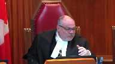
Speaker 1 (00:07:49): Yeah, thank you.
It is related because the literature on rates of recidivism is calculated using the tabulations that use, that give equivalent weight to finding of NCR as to criminal conviction.
So when you look at the recidivism rates of sex offenders, you’re looking at a population, they’re not equal in number but they feed into the same group statistics and I have those statistics in my condensed book.
I can take you to it.
Justice Brown (00:08:25): I may be thick, but I just, I don’t understand what you’re talking about.
So, assume I know nothing.
Speaker 1 (00:08:33): Yes. Let me take you to the application judge’s findings at tab two of my book.
So the conclusion that I’m referring to is at paragraph 112 of my condensed book which begins on page 42 of my condensed book.
So that conclusion there affirms that a history of sexual offending increases the likelihood that an offender will commit another sexual offence that in assessing the risk it makes little difference whether a finding of ncr whether the sexual offence results in a criminal conviction that individuals found ncr have criminal rates that are substantially higher than the rates of spontaneous first time offending and that the same well established risk factors for general offenders apply to individuals found ncr.
So that’s the principle conclusion about the nature of the risk.
When you’re looking at an individual and assessing that individual’s risk, the factors that lead you to conclude that that person is lower risk or higher risk and we’ll talk about how that assessment is done are equivalent as between persons found ncr and persons who have been criminally convicted.
Justice Brown (00:10:07): It’s the factors that go into it that are equivalent, not the rate of recidivism itself.
Overlapping speakers (00:10:13): but the rate of recidivism is elevated above the…
In both cases it’s elevated over the general population.
That’s correct.
Justice Brown (00:10:19): Got it.
But they’re not necessarily the same people.
Justice Moldaver (00:10:23): compared, as I understand it, to first-time offenders among individuals with no prior criminal history.
So just help me out with this.
The legislation, as I understand it, that applies to, we’ll call them regular criminals, is not restricted, I don’t think.
You tell me if I’m wrong, to first-time, whatever this is, offending criminals with no prior criminal history.
Overlapping speakers (00:10:51): No, that’s exactly right.
Justice Moldaver (00:10:52): That’s exactly right.
So stay with me.
So where are the statistics about criminals who are multiple offenders but still have an opportunity to potentially get a discharge, I guess, although that might be rare, but could apply for a pardon after a period of time?
I mean, let me step back for a second.
It seems to me that if the respondents can show that there are some regular criminals who would get the benefit of exit ramps and none that can get the ability of exit ramps if they’re NCR, they’re stuck for life, that there is clearly a distinction.
There’s clearly a distinction between the two.
And your friends say the distinction is based on an enumerated ground and all that goes with that.
So, you know, your friends don’t have to prove that, you know, everybody who gets convicted criminally gets off the list because or that can get off the list.
They’ve just got to prove that some do.
And if it’s available for some of those people, but none of the NCRs, then you’ve got some explaining to do, it seems to me, with respect.
Speaker 1 (00:12:19): Yes, and I have an explanation.
I have submissions on the section 15.
I just want to identify one part of the facts that you referred to, the relevance of that first time offender fact.
The reason that that is relevant here is because of the purpose of Christopher’s law and the effect of Christopher’s law.
What Christopher’s law does is it allows police to say if a sexual offence has been committed in a geographical area, who are the people in that geographical area that we want to rule in or rule out first based on what information is known.
So there, if it is known that within that geographical area you have timely and up-to-date information about persons who by their past actions pose a risk of recidivism that is greater than the risk of spontaneous offending in the general population, then that’s important information for police to have.
They know right there, there are people in this area who pose an elevated risk.
That’s the relevance of that fact.
Justice Moldaver (00:13:14): important, but according to the legislation as I understand it, people who are not first time offenders and who may have posed quite a serious risk can get off after five or ten years or whatever the time is if they can get a pardon.
Speaker 1 (00:13:29): Everybody who is on the list has committed an offence or either been convicted of an offence or has been discharged by a review board on a finding of NCR of an offence.
So everyone in the database is has by their past actions put themselves into a group that actuarially poses an elevated risk relative to the general population.
Only one group is not able to get off. Yes.
Justice Abella (00:13:56): And that is a group that is on the list because they have been found to have a mental disability.
So how does recidivism rate justify an exclusion for this one category?
Speaker 1 (00:14:10): They have been placed on the list not because they have a disability but because they have committed an action in a mentally disordered state that puts them at risk of committing another action.
Justice Abella (00:14:22): and the generalized proposition that they are therefore more likely to commit offenses is something that justifies their never being able to get off the registry.
Speaker 1 (00:14:37): The residual risk that remains, the actuarial risk that remains after an absolute discharge from a review board, the elevated risk, and I’ll take you to the findings about that risk, justify the modest requirements of Christopher’s law, the reporting requirement to assist police in managing the residual risk that remains when persons are discharged into the community.
Justice Brown (00:15:01): doesn’t that apply to other offenders on Christopher’s Law?
Justice Brown (00:15:06): If the difficulty is, as I understand it, and these are the findings of course, that individualized assessments aren’t reliable, all we have is actuarial data, why then the off-ramps for everyone else?
I say no off-ramps given those concerns.
Speaker 1 (00:15:21): There is a there are the Court of Appeal says there are two off ramps one for pardoned persons and it’s true that section 9.1 of Christopher’s Law creates a way out of the registry for
Overlapping speakers (00:15:33): person.
Speaker 1 (00:15:33): has a partner record suspension.
The other one is the if you’re never convicted, you’re never on the registry in the first place.
Of course.
Persons found guilty and absolutely discharged under section 730 are never convicted.
Those are the two ramps identified by the Court of Appeal.
Overlapping speakers (00:15:49): But don’t we have the same actuarial concerns about that?
Speaker 1 (00:15:52): Well, the evidence is a bit different.
Let me turn to that right now, the discrimination issue.
Justice Martin (00:16:00): Could we, before you go there, I do have a question about the actuarial risk.
In terms of the evidence that’s put forward, the difference with NCR is that somebody has a mentally disordered state at the time that they did the act.
Is there any controlling in the actuarial risk for whether that person is in a mentally stable state or whether they’re disordered in terms of recidivism, i.e. whether they’re on their meds or they’re not on their meds, whether they’re seeking treatment or they’re not, or is everybody who’s in the NCR category for recidivism just lumped in together whether or not they’re obtaining treatment?
Speaker 1 (00:16:38): The evidence was that actuarial measures of risk, empirically-based measures of risk, do take into account both protective factors and factors that aggravate the risk.
So different instruments look at different factors.
They look at factors that have been scientifically validated to be predictive.
And they don’t just look at factors that increase the risk, they also look at factors that increase the risk.
Justice Martin (00:17:02): But that’s the factors.
I mean, to me there’s a bit of a mixing up even in the passage you cited us.
There’s the factors can apply to those who are ncr, to those who are not.
I understand that those factors may have.
But there’s a statement here on which I think you put a lot of weight.
Which individuals found ncr have criminal recidivism rates that are substantially higher than the rates of spontaneous first time among that particular, that’s a statistical thing of elevated risk.
And what I’m asking you is does the evidence that you put forward, does Dr. Hansen ever take into account that certain ncr may be more at risk or more at risk of recidivism because they are not mentally stable or whatever?
Is there any differentiation that goes on there?
Speaker 1 (00:18:03): Yes, so there is risk differentiation within the community of persons who have committed a past sexual offence, there is a way of assessing what risk category they fall in and I can take you to that evidence and those findings.
So some persons who commit sex offences will because of a constellation of factors applicable to them, protective factors, will fall in a category called low risk.
Let’s look at what that looks like.
That’s it.
Tab 4 of my condensed book.
At page 133. Tab 4.
It’s page 133 of the condensed book.
So, this is relevant to the issue of levels of risk and how risk is assessed and Dr. Hansen’s evidence was that by looking at factors that are validated to be predictive of risk, factors that either increase or decrease the risk, you can assign individuals to categories that are ranked in terms of their relative risk and you see it at the bottom there, risk level low, moderate, high.
Those levels are arrived at through the application of an empirically validated assessment tool.
You take the person in front of them, in front of you, you assess that person according to factors that are shown to be predictive of the risk of recidivism and that allows you to, if you will, put that person into a category of risk, low risk, moderate risk, high risk.
That can be done for persons found NCR just as it can be done for persons who have been convicted.
The risk levels are relative levels, so low risk means if you fall within this, if your score falls within a certain band, you’re in the low risk which means your expected rates of recidivism of persons who score like you are lower than that of persons who would score in moderate, persons who would score in high.
So it’s possible to assess and Dr. Hansen says this in his cross-examination.
I have that in my condensed book as well.
It is possible to take an individual to apply an empirically validated test and to assign a risk level to them, a relative risk level, but what that means is you have a population of persons who are, let’s say, low risk.
The risk, Dr. Hansen says, the risk of the individual, the low risk individual in front of you, the best assessment of the risk of that person’s recidivism is the risk of recidivism of persons who fall into that category and what it is is out of 100 low risk sex offenders, after five years, two of them will recidivate, after ten years, three out of that 100 will recidivate, and after 15 years, five out of that 100 will recidivate.
You don’t know which ones.
If you stop at five years, you have 100 low risk offenders, 98 of whom are non-recidivists.
You don’t have a population of recidivists and non-recidivists.
All of the 98 are non-recidivists at the time of the assessment, but one of them goes on to recidivate in the next five years.
You don’t know which one, but you know that one of them will.
Justice Abella (00:22:09): but isn’t that an argument for pressing and substantial objective?
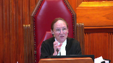
If you look at what we said in Winco about the importance of individualized assessments for persons who are found to be NCR, and you look in particular at what the Court of Appeals said out in paragraph 13 of its reasons, where they quote the application of the judge when the appellant got an absolute discharge, the opening sentence is the board finds unanimously that the accused is not a significant threat to the safety of the public.
So your argument is a blanket justification for failing to give every individual NCR or otherwise in the criminal system the benefit of an individualized assessment to determine whether he or she is in fact a risk to the public.
So I can’t think of any other area where we say because generally there may be an issue, therefore we don’t have to give procedural protections, rights available to particular groups of people.
It’s an argument in favor of stereotyping, isn’t it?
Speaker 1 (00:23:24): No, in our submission, it isn’t.
It’s the opposite of stereotyping.
It’s actuarially scientifically validated data that recognizes the limits of perfectly tailored individualized risk assessment.
It assigns risk levels to persons not based on a stereotype and not based on a diagnosis, not because they have a mental disability, but because of actions in the presence or absence of factors.
Justice Côté (00:23:49): But if those offenders, the NCR offenders, pose no higher risk than convicted offenders, how can you justify not providing them with the possibility of seeking an exemption?
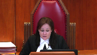
Yes, so that… The risk is not higher than for the convicted offenders.
Speaker 1 (00:24:10): Yes, that brings us then to the issue of persons who receive pardons, the discrimination issue.
And I just, before I go to that, I just want to answer Justice Sabella to say we do rely on it under Section 1.
We also rely on it under Section 15.
We say it goes to the issue of whether there has been the imposition of arbitrary disadvantage here.
And in our submission, it doesn’t rise to the level of arbitrary disadvantage.
It meets the Section 15 requirements of correspondence that there is this.
Overlapping speakers (00:24:40): we got rid of in Whittler.
Speaker 1 (00:24:41): Correspondence isn’t eliminated in Whittler.
Whittler says perfect correspondence is not required.
Overlapping speakers (00:24:49): comparative groups are gone.
Speaker 1 (00:24:50): It isn’t in our submission, it’s not about whether there’s a mirror compared to group.
It’s about whether the actual capacities and circumstances of the individuals who are affected by the law, whether the law recognizes their actual situation and we say that’s what the evidence shows.
Justice Abella (00:25:06): Is there a distinction which has a disparate impact on a group of people because of an analogous or an enumerated ground?
Speaker 1 (00:25:15): That’s the first step of the section 15 test, but it’s not the end of the analysis the first step is does it by its adverse impact does it have a Does it in effect draws a distinction of course the statute does not draw a formal distinction?
This isn’t a facial distinction case the formal distinction drawn by the statute is Persons who receive a pardon are treated differently than persons who don’t That’s on on
Justice Kasirer (00:25:41): that, does Dr. Hansen say anything about whether persons who receive pardons are at an elevated risk as against the general population?
Speaker 1 (00:25:52): does.
This is what he says.
And I just introduce it by saying the evidence on the risk of recidivism of persons who receive pardons is very thin in this case.
People who receive pardons were not mentioned in the expert reports of the claimant.
They weren’t mentioned in the expert reports of Dr. Hansen.
The only evidence about persons who receive pardons is the answers given by Dr. Hansen to two questions on cross-examination.
He’s asked, and it’s tab 6 of my condensed book.
It’s page 150 of the condensed book.
He’s asked if the granting or withholding of a pardon or a record suspension is a predictor of the likelihood of future recidivism, and he says, I have not found convincing evidence one way or the other.
I think there are good reasons that it should be protective, but the empirical evidence on this issue is thin.
And he’s asked why is it thin, and he explains it’s because of the difficulty of carefully constructing an experiment to test that hypothesis.
And he concludes, the evidence that’s available is generally supportive of pardons as a protective factor, but the quality of the scientific evidence is insufficient for strong conclusions.
Justice Kasirer (00:27:19): So where does that leave you with your justification for the distinction?
Speaker 1 (00:27:25): The evidence such as it is, Dr. Hansen’s evidence was that pardons, there were good reasons to think of pardons as protective against recidivism.
On the other hand, the evidence of persons who receive absolute discharges from a review board is that the risk of recidivism increases after an absolute discharge.
You’re at lower risk of recidivism when you’re conditionally discharged than you are after you’re absolutely discharged.
So while pardons are a protective factor or there are good reasons to believe he says although the evidence is thin that pardons are a protective factor that it’s not the case for an absolute discharge from the review board.
And although that’s modest evidence, it’s the only evidence in this voluminous record and we say it meets the given the nature of the risk and the uncertainty of precise measurement of the risk given the need to protect the public and we say given the deference that’s owed to the legislature in these circumstances, that’s a sufficient rational basis to justify the either to conclude that it is not arbitrarily discriminatory or alternatively under section 1 to justify the under section 1.
Justice Rowe (00:28:32): I’m feeling a bit like a trier of first instance, where you’re telling me here’s the evidence and here’s what you should conclude from it.
I thought you started by saying you relied upon the findings of the trial judge, which findings were not in dispute.
I mean you’ve been drawn into this, but you’ve used up most of your time dealing with matters that perhaps have already been decided in a sense.
Speaker 1 (00:28:59): Yes, I’ll try to proceed more expeditiously.
The ‑‑ before you go on, no, but I’ve got you.
Overlapping speakers (00:29:07): You
Justice Moldaver (00:29:07): I’ve got to be clear about this, you know, there’s not good evidence about whether people who get pardons are more likely to or less likely to or whatever.
The bottom line is, is that regular criminals can apply for pardons.
NCRs can apply for pardons.
There’s no equivalent provision that would allow even some NCRs to get pardoned.
It may be that 9 out of 10 of these people who have committed sexual crimes won’t get pardons, but one will because they have an opportunity to apply.
That opportunity, that’s correct.
And it doesn’t apply to NCRs.
Speaker 1 (00:29:50): That is correct.

I note that not every person who is convicted of a sex offence is eligible for a record suspension under the criminal records act.
Even there depending on the index offence there may be identical treatment.
You may be in exactly the same position.
It is true though for a subset of all registrants who are convicted of sexual offences for which a record suspension is available that they have an option available to them that people who are found NCR don’t.
And the reason for that is the federal enactment that restricts the eligibility for a pardon.
What Christopher’s law does is it takes the dispositions of the criminal justice system and applies a regulatory consequence to it.
But Christopher’s law doesn’t decide who is eligible for a pardon.
So if the real unequal benefit here…
Justice Moldaver (00:30:40): respect as a cop-out because the province could determine what the rules and regulations are under the federal law for giving pardons and and apply those same rules to NCRs under Christopher’s law.
I don’t think you can get out from underneath the burden.
Speaker 1 (00:30:58): That would mean then that because the federal criminal law provides an unequal benefit in the form of a criminal disposition that is not legally available by federal law to a particular group, that then the province must create its own special dispensation to compensate for that difference in the criminal law and we submit that if the real difference in treatment here is the differential application of rules to NCR persons and convicted persons under the law of pardons then that is an issue for parliament, it’s not for the provincial legislature.
And we don’t yet know how parliament will respond to the court of appeals decision, they did not appeal the declaration of invalidity against their own federal sex offender registry.
If parliament tomorrow were to make pardons or their equivalent available to NCR persons then Christopher’s law would no longer have any differential impact and what we say is that shows you that the real issue is with the federal law and not with Christopher’s law and we submit it ought to be legitimate for the province to attach administrative or regulatory consequences to the outcomes of the criminal justice system and rely on the validity of those outcomes.
Justice Brown (00:32:12): But what we’re worried about is the effect.
And it’s not so much the content of the law, but it’s the effect.
I mean, let’s take a hypothetical.
Imagine a young man with no prior criminal record or no history of mental illness has a psychotic episode, gropes two women in the street.
He’s found NCR.
And it’s later discovered that his illness is completely controlled by medication.
And he’s absolutely discharged.
He never gets an off-ramp.
If someone in his situation, though, had instead been found non-NCR and convicted, well, that’s assuming that they’re convicted.
They might have gotten an absolute discharge, in which case we’re not worrying about them at all.
But if they’re convicted, they have the option for an eventual pardon.
That’s the fundamental difference that I think is that distinction that’s bothering us.
Overlapping speakers (00:33:23): that that is the the difference in treatment is the effect it’s
Justice Brown (00:33:26): I mean, you say, well, it’s the federal law that’s the problem, but this isn’t an effect that is dictated by the federal law.
It’s dictated by how you’ve decided to tie your scheme to the federal law.
Speaker 1 (00:33:39): it is the result of us taking the outcomes of the criminal justice system as we find them.
Yes, that’s correct.
Overlapping speakers (00:33:46): But that’s a choice.
Speaker 1 (00:33:48): It was a legislative choice to rely on the validity
Overlapping speakers (00:33:55): And it’s the effect that we have to deal with.
Speaker 1 (00:33:57): We say only here that the effect is a combined effect.
It’s an effect principally we say because of how the criminal law operates rather than the province’s decision to attach certain regulatory consequences to the outcomes of the criminal process.
I want to turn to the ‑‑
Justice Martin (00:34:17): I want to come back here to the point that you hang so much on this notion of the criminal recidivism rates are substantially higher.
And I guess I just have a basic question.
Are those the criminal recidivism rates of sex offenses or all criminal or violent offenses?
Because as I read Dr. Hansen’s testimony, I don’t see that there’s any tie in to recidivism for sex offenses which is how you have I guess characterized the purpose of Christopher’s law and I don’t see the factual connect there.
Speaker 1 (00:34:58): So, I’ll refer you to the findings of the application judge, because I take Justice Roe’s point that I should be looking at the findings of fact, but…
Justice Martin (00:35:09): Okay, but that’s what I’m at paragraph 112.
It says individuals found NCR have criminal recidivism rates that are substantially higher than the rates of spontaneous.
That may be a perfectly justifiable sentence if we’re talking about any criminal recidivism.
Is it a breach of a bail provision on some other charge?
Or is it a sexual offence?
And when I read Dr. Hansen’s evidence at paragraph 23, there’s a talking of criminal or violent.
And you’re using this factual finding to say that supports the purpose which is to have a more ready access for protection against sexual offences.
And I’m asking where’s the CONNECT?
Speaker 1 (00:35:58): If I may, let me take you to paragraph 98 of the application judge’s reasons which is at page 38 of my condensed book.
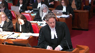
So there is a recitation above that which you may look at that leads up to this summation which is at paragraph 98 where the application judge finds the risk of recidivism among sexual offenders is significant.
That it runs for a longer period of time than non-sexual crime that sexual offenders may be difficult to identify and that there are some factors he says which set them apart and some in common with other forms of criminality.
In summary he says at paragraph 99 and he’s talking here about the risk of sexual offenses.
While it’s possible to project the risk of recidivism by relying on actuarial data and that’s that table I took you to, table 1, there is a measure of uncertainty in the result.
What is clear is that there is a risk and it’s significant.
It’s the precise degree of the risk that’s uncertain.
Those are findings of fact in relation to sexual offenses in particular.
Justice Brown (00:37:28): Just to be clear, there was a report that Dr. Hansen relied on, and somewhere in that report it said the recidivism rate for severe violent offenses within three years was 0.6 percent.
Overlapping speakers (00:37:45): That’s paragraph 23.
Justice Brown (00:37:46): Right.
Speaker 1 (00:37:48): Yes, that’s the trajectory project and that’s dealt with in some detail by the application judge starting at paragraph 107 of the application judge’s reasons and continues on to paragraph 109 and in my remaining time I don’t know that I have the opportunity to go through with you that issue but what the application judge found was because in that particular project out of everyone in the sample, so very few of them, only nine of them were known to have committed a sexual offence at all.
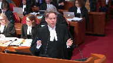
The fact that nine people recidivated at a low rate out of a population of 1,800 in the full sample doesn’t allow you to use that study to project the empirical risk of sexual recidivists.
That’s Dr. Hansen referring to a report that’s relied on by the claimant’s expert Dr. Brink.
Dr. Brink says look the risk of recidivism is very low.
Dr. Hansen explains in the trial judge accepts in a sample where only nine out of 1,800 people were sex offenders it’s not possible to draw firm conclusions from that study.
Justice Abella (00:38:56): Can you at some point when you’re ready to tell me what we take from the application judge’s conclusion of paragraph 105 that there is, there are significant studies that show that on an actuary basis there’s no different risk of a person found NCR than there is for an individual found guilty.
And therefore she says it’s not overbroad because they’re treated the same.
Speaker 1 (00:39:22): not discriminatory because they’re treated the same not overbroad because it doesn’t it isn’t it does further the purpose there’s a rational relation between the purpose of the law
Justice Abella (00:39:35): that there’s no lesser or different risk and yet even though there’s no different risk one group is deprived of an exit grant.
Get to it if you can.
The application judge there is not dealing specifically with pardoned persons. No,
but he’s dealing with Dr. Hansen’s report.
Speaker 1 (00:39:52): report.
Yes, and he’s dealing with the risk.
That was to there he finds what I said was the first critical finding of fact which is that persons found ncr as a group pose the same risk, have the same risk factors are assessed in the same way as persons who are convicted.
There is a bit of evidence in the form of the Hansen cross-examination about whether a pardon makes a difference and I’ve read to you what the answer is that Dr. Hansen gives.
But that wasn’t addressed in any of the reports and I don’t think the issue of pardons in particular is being reflected in the application judge’s finding there.
And as for persons who have been found guilty but given a section 730 absolute discharge and so are never convicted, there was no evidence about the risk of such persons.
They aren’t mentioned in the reports of the expert of the applicant.
They weren’t mentioned in Dr. Hansen’s report.
Neither expert refers to them in cross-examination.
They weren’t in the pleadings.
They’re not referred to by the application judge at all.
The idea of the exit ramp for persons who are absolutely discharged rather than convicted only comes into play at the court appeals decision and so we have we don’t have evidence on that.
And it’s a situation a lot like where at some point in the litigation at the appellate level the issue crystallized around a particular distinction absolute persons with absolute discharges under section 730 are treated differently but there was no evidence about such persons.
We don’t know whether the risk of recidivism of persons who are not convicted but are granted an absolute discharge whether it’s higher, lower or the same.
Overlapping speakers (00:41:31): Isn’t that an argument for individualized assessments?
Speaker 1 (00:41:34): So what Dr. Hansen explains and the application judge accepts, what individualized assessment means, what a reliable individualized assessment means is reliable determination of relative risk level within a group to assign a person to a category that has an expected calculable recidivism risk over a certain time frame and you can do that individual assessment.
It isn’t what the ORB does and that’s a very important point both under 15 and under section 1
and I am running a bit out of time and I simply say that this issue, we say this issue is applicable both under 15 and under section 1, the review board is doing a different task and the court of appeal correctly identified that.
The review board is asking itself a different question and it’s giving a different answer than what Christopher’s law does.
So it would be a mistake to say that both the review board and Christopher’s law are both trying to accomplish the same thing but one of them does it through individualized assessments and one of them does it through actuarial means.
That’s not quite right.
The review board asks is this person a significant threat to the safety of the public such that they should be ‑‑ that would justify conditions being put on preventative, restrictive conditions up to including detention and hospital.
That’s the assessment that the review board is doing.
And the review board makes the best decision it can with that threshold of significant harm to the safety of the public and then it makes the decision if they are not ‑‑ if that risk doesn’t rise to the level that a compulsory order of the board, a restrictive order to prevent future action is justified, then that person is discharged but it does not mean ‑‑ and the court of appeal accepts this.
Justice Moldaver (00:43:30): It paragraphs.
Justice Doherty deals with this.
They’re different tests, but can you not just help me out?
Is a conditional discharge included where the regular criminals, do you go on the list at all for that?
Speaker 1 (00:43:42): You have to be convicted and so if instead of a conviction there’s a finding of guilt and a conditional discharge under section 730 of the code then you’re not on Christopher’s law because Christopher’s law attaches to a conviction and not a finding of guilt.
Justice Moldaver (00:43:55): So the answer is, if you get a conditional discharge and you’re put on probation for three years, you don’t go on the list.
Speaker 1 (00:44:03): That’s correct, because you haven’t been convicted.
There is no evidence in the record about how the risk of those individuals with those dispositions, how that compares to the risk of individuals who have been absolutely discharged by a review board.
What if you, sorry, oh excuse me.
Justice Kasirer (00:44:18): What, what, just to follow up on that, what, what about if you plea bargain?

What about a regular offender charged with sexual assault who plea bargains down to a simple assault?
And an NCR person can’t do that.
Isn’t that a distinction that…
Speaker 1 (00:44:38): The issue of the choice of the charge is equal as between both groups.
The person found NCR may end up being found NCR for who still has to be a proof beyond a reasonable doubt that they committed whatever the particular offences.
So a person initially suspected of a sexual assault may be found NCR for a simple assault in which case they’re not on Christopher’s law either.
Justice Kasirer (00:45:06): No, the question is, let’s say you’re charged with two counts of sexual assault and you plea bargain for one sexual assault and one simple assault.
Your treatment is quite different if you’re a regular offender and if you’re an NCR offender, then of course it’s not.
Speaker 1 (00:45:25): Yes, if you’re not convicted of a sexual assault, you’re not on Christopher’s Law just as if you’re not found NCR for a sexual assault.
In your hypothetical, the person charged criminally is able to obtain a charge that is more preferential to them than the person found NCR.
I want to point out the issue of charging is the same for both populations.
There’s no evidence that persons who will be found NCR are in context that might have led to a finding of sexual assault won’t sometimes be just found NCR for a simple assault.
That’s not a difference in treatment that inheres in the difference between conviction and NCR.
It can arise under NCR.
The charges may be laid or stayed, depending on what they are, in advance of whether you know whether the person is going to be found NCR or whether they’re going to be acquitted or whether they’re going to be found guilty.
So that’s not a distinction inherent in the NCR system.
Justice Côté (00:46:28): Mr. Green, in the interest of time, I would like to hear you about your alternative argument that there should not have been an individual remedy granted here.
Speaker 1 (00:46:41): Yes.
I do want to turn to that.
I wonder if I could say one more word about the review.
Overlapping speakers (00:46:51): But don’t forget my question. Yeah.
Speaker 1 (00:46:52): Yes, thank you very much and I do want to get to it
but I want to be sure that our position has gone in in respect to the difference between the review board.
And I just want to highlight for the court the distinction that the court of appeal draws at paragraphs 95 to 100 of the court of appeals decision explaining the difference between a review board disposition finding that a person is no longer a significant threat to the safety of the public and the lower but real and residual risk that is present after an absolute discharge by the review board.
So the level of risk, the level of risk to the safety of the public that would justify the imposition of intrusive restrictive preventative conditions before the review board, that’s a higher level of risk than justifies what the court of appeal calls the modest regulatory requirements of Christopher’s law and Christopher’s law picks up where the review board lets off.
The review board does an individualized assessment and determines that you don’t meet the higher bar of significant threat to the safety of the public and then that person is absolutely discharged even if they may pose an elevated risk of recidivism relative to the general population because we don’t have a system of indefinite review board detention or review.
And we bear the risk.
We bear the risk of a fallible individualized process in front of the review board because the alternative is indefinite review board supervision.
But given that we bear that there is some residual risk even after the absolute discharge that that risk is higher than the general population we say it’s legitimate therefore to have a new risk mitigation strategy that doesn’t rely on preventative or incapacitative measures but that is a modest reporting requirement to manage the residual risk that remains the lower but real residual risk that remains after the review board disposition.
Overlapping speakers (00:49:09): Right, because the registry’s value is in investigations, isn’t it?
Speaker 1 (00:49:13): it.
That’s exactly right.
And the application judge found as a fact that it was at paragraph 179 of his decision that it is an effective tool, that it does improve the ability, that’s paragraph 179 of the superior court’s reasons at tab 2 of my condensed book, that it does improve the ability of police to investigate and prevent sex offences, that it does allow police to more quickly eliminate those who might otherwise be suspects.
So it has an exculpatory as well as an inculpatory investigative function.
Justice Abella (00:49:47): I want to be clear, I understand, if we’re not with you on whether or not there’s a prima facie breach of section 15, I’m not clear on your answer to why an NCR person with an absolute discharge can never apply to be off the registry.
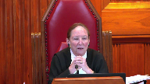
Just summarize your justification.
Is it the rates of recidivism?
The general rates of recidivism that Dr. Hansen stipulated justify a lifelong exclusion from the possibility of that remedy.
Speaker 1 (00:50:26): We say that arises under minimal impairment.
It’s conceded here
that pressing an objective and rational connection, the crunch question under minimal impairment is would an individualized process of exemptions be more minimally impairing.
We say it would not be more minimally impairing while still meeting.
Overlapping speakers (00:50:46): So why would it not be more mental-meaning impairing?
Speaker 1 (00:50:50): because it would introduce a measure of fallibility and uncertainty because if you look at the table there the recidivism table always
Justice Abella (00:51:00): and uncertainty when you do a risk assessment even of people who are not NCR?
Speaker 1 (00:51:06): There is always an uncertainty, but this is a population that actually poses a higher risk and because the impact on them is modest as the court of appeal found, as the application judge found, because we’re talking about an annual reporting requirement, that modest intrusion …
Overlapping speakers (00:51:23): You’re also talking about ongoing random police checks.
Speaker 1 (00:51:27): There is certainly no evidence that this respondent has ever been subject to a random police check.
It must also be noted that the facts of this in-person police check are not based on the
Overlapping speakers (00:51:38): individual subject to ongoing random police checks the police already know about the criminal history of this individual so they don’t need random police
Speaker 1 (00:51:46): The application judge found that what the registry does is it collects information that is already available to police in one easy place that makes it quickly accessible but that police already have access to the review board disposition, the finding of ncr.
These are all matters of public record.
Justice Abella (00:52:08): The possibility of a risk justifies the impossibility of the possibility of getting off the register.
Speaker 1 (00:52:15): It’s a balance between the impact of the registry and the uncertainty inherent in a fallible individualized assessment not knowing if you look again at that table of recidivists not knowing after five years.
If you said after five years you have 98 non-recidivists who are all low risk, if you stopped following them, one of the 98 non-recidivists goes on to recidivate in the next five years.
If you stopped after ten years, stopped following them, you said the rate now is 3%.
We have three persons after ten years who have recidivated.
We have 97.
They’re all low risk.
They’re all non-recidivists.
But of the 97, two more of them will go on in the next five years.
We’re talking about a lifelong ban.
It’s not a ban, it’s a requirement.
Justice Abella (00:53:01): a lifelong requirement no matter how the person has been able to demonstrate that he or she is no longer a risk.
Overlapping speakers (00:53:12): Yes.
Justice Abella (00:53:13): Yes.
And what justifies that is the possibility that others may risk?
Speaker 1 (00:53:19): But what justifies that is that with the best empirical measurement of risk of that individual, the best most reliable empirical measurement says this person is assigned to a category of a population of persons, some fraction of which will go on to recidivate and you don’t know which from among it, among the population, and so in that context where we’re not talking about the detention or restrictions on the conditions imposed by the review board, we say it is proportionate and legitimate to require those people to register once a year to put their information which is basic identifying information into a police registry that is not accessible to the public that has been found to assist with the prevention and detection of offenses.
Justice Kasirer (00:54:09): Clearly the people who receive a pardon also are at an elevated risk.
So it’s fallible, too.
It makes Justice Abella’s point.
Why are you talking about fallibility for NCRs?
Why don’t you talk about fallibility for regular offenders who receive pardons?
Speaker 1 (00:54:32): collapses.
If that’s the defect in Christopher’s law, then it has an underinclusive benefit.
It provides a benefit to pardoned persons that it doesn’t provide to other persons and then at the level of remedy, this is a case like shactor.
You have a legislature that has provided an unequal benefit and it’s a policy choice for the legislature how to respond to that underinclusive benefit.
It can do so either by extending the benefit or removing it altogether.
Justice Brown (00:54:59): wait for your Section 7 challenge in the mail, I imagine.
Justice Karakatsanis (00:55:02): So, that brings me actually, a lot of this discussion is also relevant to Section 7.
Let me ask you this, Mr. Green, if, at the end of the day, I was with Justice Joe Wording on Section 15, or at least with respect to the exit ramps, why would you say it’s not, this is not an appropriate case to consider the Section 7 analysis.
Speaker 1 (00:55:26): The application judge found in the Court of Appeal affirmed that it was not over-broad or arbitrary, that there was the level of rational connection necessary under over-breadth and arbitrariness between the purpose of the law and its impact on individuals, that imposing modest reporting requirements on individuals who, as a population, are at increased risk.
Justice Karakatsanis (00:55:51): It’s a slightly different question I’m asking, not why do you think it doesn’t, um, offend Section 7, rather why do you say this is not an appropriate case to consider whether it offends Section 7?
Speaker 1 (00:56:05): I’m content for the court to consider whether to defend section 7.
In the interest of prioritizing my argument, I wanted to focus on our appeal which is against the declaration with respect to the infringement of section 15.
We do make a full argument about section 7 and I rely on that and as I have six minutes left, I think I’m going to have to rely.
Justice Moldaver (00:56:26): here, we’re not, I don’t think anybody here is suggesting that you have to have an identical scheme to the scheme that applies to regular offenders.
In fact, it may well be because one of the things that happens when NCRs are let out, the report says as long as they keep on their meds, they’re fine.
There won’t be any problem at all, but we know that at times they go off their meds and that’s when the problems occur.
So it may be that the provincial legislature will want to come up with a scheme that says, you know, after five years when you’re out or three years when you’re out or whatever, then we’ll have an individual assessment.
I don’t know.
We’re not telling you, at least I’m not, what the scheme will be and I’m surely not telling you that it’s got to be identical to what applies to regular offenders, but the problem is there’s nothing there.
There’s no chance of an NCR for his or her lifetime ever getting off this thing and that’s the big problem.
Speaker 1 (00:57:27): And if that big problem arises because of a difference in treatment between pardoned persons and others, then my only point relevant to remedies, it’s important to state that that’s the problem because that’s a problem that can be fixed one of two ways and it should be open to the legislature to choose.
I’m going to turn now to remedy.
Justice Wagner (00:57:45): And in turning to Remedy, because you only have four minutes left, I would like you also to explain to us, should we come to the conclusion that those provisions, Christopher Law, are unconstitutional, why we should suspend the declaration of invalidity?
Speaker 1 (00:58:03): The court of appeal granted a suspension of the declaration of invalidity and it said it was because there were several ways that the legislature could respond and also that the immediate invalidity would pose a potential danger to public safety and that’s the paragraph 150 of the court of appeals decision.
And we say the court of appeal was correct to find that.
This is exactly the kind of case for a suspension of the declaration.
This case falls squarely within the public safety rationale for the suspension of a declaration which goes back to Swain or even earlier and was expressly recognized in shactor as one of the permissible pressing reasons to suspend a declaration where the granting of an immediate declaration would leave a gap in the law and the immediate nullification of Christopher’s law as applied to all persons found NCR and absolutely discharged would create that public safety risk and the court of appeal found that and we don’t disagree with that.
Where we say the court of appeal erred is in granting an immediate individual remedy to the respondent in this case and we say that was an error for two reasons.
The first was that again at paragraph 150 the court of appeal said a suspended declaration of invalidity on its own would leave the appellant without any remedy for the breach of his section 15 sub one rights and went on to say at paragraph 153 the court should be able to fashion a meaningful remedy for the rights claim and we say with respect it was an error for the court of appeal to hold that a suspended declaration of invalidity would leave the appellant without any remedy.
It would leave him with exactly the same remedy as every other person in the province who is subject to Christopher’s law.
The declaration of invalidity is the remedy under section 52 of the constitution act for laws that are inconsistent with the constitution and even if temporarily suspended that declaration can’t be called an ineffective remedy.
In fact, all of parts 20.1 of the criminal code and the whole modern law of not criminally responsible is the response, it’s parliament’s response to the suspended declaration in Swain and that was a very effective remedy.
And this individual and many other individuals over the years have had the benefit of that very effective remedy because they have gone through the process developed by parliament in response to a suspended declaration of this court.
Nor was there any evidence in this case of any special circumstances concerning the respondent in particular that would mean that he could not wait for a suspension.
So one can imagine circumstances, circumstances that might arise in a case like Carter or like Rodriguez where the successful litigant can’t wait for a suspended declaration and will be deprived of a remedy if the declaration is suspended.
And the court of appeals said there was no absolute rule precluding an individual remedy during the period of the suspension and we don’t argue today that there should be an absolute rule.
Justice Moldaver (01:01:11): What do you say to Justice Doherty’s position, though, that if this man would not be taken off the registry at this point, 17 years later, without the hint of a problem, then any legislation that you might enact that would require him to stay on the registry would be unconstitutional?
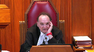
Speaker 1 (01:01:33): We say that what the Court of Appeal held was that there should be carefully tailored individualized assessments for individuals and that Christopher’s law was deficient in not providing that and we say there was no expert forensic assessment done of this respondent.
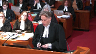
The respondent relied on evidence from his treating physician and that evidence was rejected as unreliable by the application judge.
The respondent says well questions about him were put to Hanson on cross-examination but Dr. Hanson was very clear he had not purported to assess the respondent so if Christopher’s law is invalid to the extent that it does not provide an individualized process for people who have been absolutely discharged whatever that individualized process will turn out to be the respondent hasn’t been through it.
Justice Karakatsanis (01:02:20): Isn’t a 20-year record some evidence upon which you could make that conclusion, draw that conclusion?
You’re saying an assessment is better than what’s happened over the last 20 years?
I think that it can’t ‑‑ I submit that carefully tailored ‑‑ Saying it’s necessary, not better than.
You’re saying it’s necessary.
Speaker 1 (01:02:37): Well, that was the defect identified by the Court of Appeal that there needed to be this individualized assessment and if that’s the defect, then I merely point out this individual has never been through that individual assessment.
Justice Wagner (01:02:50): Thank you.
Speaker 2 (01:03:18): As announced in our written submissions, Canada is not taking a position on Section 15 in this appeal.
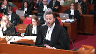
Also, my focus this morning is not to insist on defending the specifics of the provincial legislation, such as, for instance, whether the Charter requires that exclusion possibilities, upon request of an individual, be provided in the provincial legislation.
What I want to insist on under Section 7 of the Charter is that purporting obligations can be imposed at the outset, as the default mode in the legislation, without requiring an individualized assessment at the beginning of the process.
It was opened to the legislature to use the criteria of prior offending behavior to determine inclusion in the registry.
The registry is not meant to punish, but to address the risk of sexual offenses, recidivism.
The court’s decisions in Swain and Winco do not stand for the proposition that the same kind of assessment of risk must be applied to NCR individuals, regardless of the context.
Under part 20.1 of the Criminal Code, the restrictions on liberty imposed by the Review Board on an NCR individual can be quite severe.
They are justified only where the individual is shown to pose a significant threat to the safety of the public.
This must be based on concrete evidence about the person, and must therefore be assessed through an individualized assessment.
Moreover, if the Board is uncertain as to whether the individual poses that level of risk, a significant threat, the uncertainty plays in favour of liberty of the NCR person, and he must be absolutely discharged, as this court stated in Winco.
Now, risk is a matter of degree.
Based on actuarial data, the applications judged below concluded that absolutely discharged individuals, while they may not pose a significant threat to the safety of the public, still represent a residual level of risk of reoffending that is higher than the general population.
It is appropriate for the legislature to react to this apprehension of harm with a residual inclusion in the registry.
Now, we acknowledge that the reporting obligations are not trivial, but they are nevertheless more modest than the restrictions on liberty that can be imposed on a person who is under the supervision of the Review Board.
Justice Rowe (01:06:19): I don’t want to interrupt your floor, but isn’t it as a practical matter the only thing that the police have because of this registry, which they don’t have from other records, is the address of the individual.
Speaker 2 (01:06:31): Correct.
They may have an address at the time where the events had occurred but this could very well have changed.
I mean, that’s very true.
Many matters that are required by the police, the address of the individual where they work, what kind of car they drive, what they look like, unfortunately the reality of life is that those things aren’t static.
If they were static we probably wouldn’t be here today but reality of life is that unfortunately for a lot of us these things change and that’s why we need the registry to be updated so the person is asked to report once per year to assist in keeping that information up to date.
Canada submits this obligation appears rationally connected and proportional to the important public safety objective of protecting society and its most vulnerable members from sexual offences.
Thank you.
This completes my submission.
Justice Wagner (01:07:43): The court will take its morning break, 15 minutes.
Justice Rowe (01:08:17): The court, the court.
Justice Wagner (01:08:45): Mr. Squadron.
Speaker 3 (01:08:51): Good morning, chief justice, justices.
I wish to begin very briefly and take the court in our condensed book to tab one to the comments of the then chief justice also citing the Canadian disability rights council.
Giving us the context, this is tab one of our brief and it is from Swain of the differential treatment.
It is in the context of the historic disadvantage.
So at the bottom of page 973, the mentally ill have historically been the subjects of abuse and neglect and discrimination in our society.
The stigma of mental illness can be very damaging.
The intervener CDRC describes historical treatment of mentally ill as follows.
For centuries persons with mental disability have been systematically isolated, segregated from the mainstream of society to value the ridiculed and excluded from participation in ordinary social and political processes.
And then continuing on, the above description is in my view unfortunately accurate and appears to stem from an irrational fear of the mentally ill in our society.
Following Swain, the criminal law process as applied to those found not criminally responsible or at that time not guilty by reason of insanity was completely revamped to address the individual circumstances and the risk, the protection of society.
That was necessary in that context.
What we have now though is a law that makes no such allowance or consideration.
There is no effort to address the circumstances or needs of the persons found NCR.
It treats the NCR finding as the equivalent of a conviction with an important exception.
Particularly in the case of more than one offense.
It simply leaves them there.
Under the implied assumption, and this again is the irrational fear of the mentally ill, that they’re incapable of overcoming the circumstances of their offenses.
They’re incapable of rehabilitation.
This case is not an attack on offender registries.
The circumstances of the registries coming into existence, the terrible case of the child whose name was given to the legislation, the purpose of law enforcement is not questioned.
What we have to recognize here though is that all offenders are not the same.
And most importantly, all persons found not criminally responsible are not the same.
Their circumstances are as varied as the example, well of course Joseph Frederick was convicted.
He was found guilty.
Justice Rowe (01:12:11): Isn’t your Section 7 argument really an attack on all the registries?
Speaker 3 (01:12:18): The section 7 argument does not attack the registries globally because what it asks is that the when considering particularly the security of the person issue that the impact of the legislation be viewed through the lens of equality.

In other words, it’s not just about equality, it’s about equality of rights, equality of justice, equality of justice, equality of justice, equality of justice, equality of justice, equality of justice, equality of justice, equality of justice, equality of justice, equality of justice, equality of justice, equality of justice, equality of
Overlapping speakers (01:12:45): No, I was referring to Section 7.
Speaker 3 (01:12:47): Yes, of course.
And I’ve come back with how I will submit that section 7 is infused by section 15.
But the short answer is in respect of a convicted offender, a person who is found guilty and convicted, the there is no reason to question the reasoning of, for example, the dick decision or the debiting decision with respect to the impact of the registry.
Those persons who have committed the offences, it may very well be that those people who are convicted are not particularly susceptible to the injury that a person that has a mental disability may be susceptible to in being placed on a registry and being subjected to the registry requirements, particularly, again, given that the range of risks that can be posed by a person found NCR, particularly in that range is, again, as variable as there are people found NCR.
So I don’t need, I’m not submitting a frontal attack on the registries generally through section 7.
Justice Rowe (01:14:14): Now it’s not a frontal attack, it’s a collateral attack.
But the implication of giving full scope to the logic, which is embedded in your arguments and I would think that of the interveners, is that the registries have something before you go on the registry.
There has to be an assessment before you’re placed on the registry.
That seems to be the logical extension of what you’re saying, albeit it’s not the remedy that you’re seeking today.
Speaker 3 (01:14:45): And I do accept, Justice Roe, that there could be implications in respect of a finding that section 7
liberty restrictions are in fact more serious than were found by the court in Court of Appeal in Ontario in Dick.
And or that there are security of the person implications in circumstances that may not simply be restricted to circumstances where a person has a mental disability.
So I don’t, I’m not proposing to close the door but that case is not before the court.
That case may come, the case may come.
We know that the long case isn’t coming.
But the, those circumstances could arise but in this case we ask that when we consider section 7 that we consider the circumstances of the person who is before the court, the equity seeking group, the claimant, the disadvantaged group because, well it becomes very important when we do consider section 7 and of course how you treat people that have a mental disability and whether we’re going to essentially disenfranchise them from having access to security of the person interests.
Justice Moldaver (01:16:03): Doesn’t that go down to, doesn’t that come down to, assuming we agree that there’s discrimination here and so on, doesn’t it come down to the legislature tailoring something that takes into account that the people who are in CR are different than, or potentially different than the regular criminals?
And, you know, if we strike this down because it is discriminatory now and the legislature comes out with something that isn’t satisfactory, then you’ll be back presumably, but surely it’s not for us to direct the legislature to say here’s how you deal with this different group of people.
Speaker 3 (01:16:43): At paragraph 55 of the appellant’s factum, the appellant suggests that the answer to the unequal opportunity of exit ramps is to simply take the exit ramps away from those who are absolutely or conditionally discharged.
Take the exit ramps away from those who receive record suspensions.
Justice Moldaver (01:17:06): When they do that, you come back here on section 7, but we’re not there yet and quite frankly I would be enormously surprised that that’s the way the legislature of Ontario would deal with this.
But I could be wrong.
First time, but…
Speaker 3 (01:17:25): Certainly that will bring us very importantly to the question of remedy right away as to whether the respondent in this case has to then go through a process that then where he only has no access to a remedy because the other exit ramps have been taken away.
So that’s I submit that, again, we don’t know what the legislature is going to do.
So where I think that this brings us to is the different ways that the registry discriminates.
So there certainly is case law where there are cases where in the sexual offenders are given conditional or absolute discharges.
Sometimes even the case of two offenses.
And in the case of trout lake which I’ve excerpted at tab two of the condensed book, the question of whether the offender would be placed on the registry in this particular case for life because there were two offenses was an important consideration to the trial judge in sentencing in determining whether a conditional discharge was appropriate.
So it’s at paragraph 13 which reads what would the significant repercussions in this and be in the case of bar, what would they be?
There would be and this is where I come to Christopher’s law which is not punitive legislation per se
but it would be for the rest of his life for these two offenses and he would be required to register as a sexual offender.
And then continuing on in the next page at paragraph 22, paragraph 22 should he because of these two minor sexual assaults find himself caught up in Ms. Christopher’s law, is that a serious consequence which flows to him which would be something far beyond in my view what the public would expect for acts committed again because it was the lifetime registration for the two offenses.
So this is one of the points of flexibility that is not available to a person found NCR of course.
Then we take justice’s question which of course is can you not in a plea bargain arrangement accept guilt in respect of one offense or accept guilt in respect of a lesser charge?
So here we have a very interesting fact scenario in respect of the first sexual assault charge.
It was the sexual assault enforceable confinement together where G essentially blocked his wife from leaving the house.
She was going to go pick up the children, asked to have sex and marched her up the stairs toward the bedroom at which point she gets the phone, calls the police, he goes into the backyard.
That is the first of the two sexual assaults.
It could have been established that that was a forcible confinement.
In the marching up the stairs it could have been a simple assault.
But what we have here is and it could also of course have been a sexual assault.
But in the absence of the ability to plea bargain here, to accept guilt and accept a finding in respect of the one charge of sexual assault, the second charge is in respect of an acquiescence because of a fear that she might when he had been drinking and he was in a manic state that he might become aggressive.
So that is the second offense.
So we have a question here of a differential between 10-year period of registration because it could reasonably have been simply a single finding.
Justice Moldaver (01:21:30): understand why the plea bargaining doesn’t work in this context.
It’s up to the Crown as to what the Crown ultimately decides to proceed on.
And it would be open to the Crown to say, okay, we’re only going on X offence and we’re content that, you know, the accused person be found NCR on that.
I mean, that doesn’t mean they have to go on everything.
Speaker 3 (01:21:54): That is an excellent point.
And again, but it is not open to the accused to negotiate a plea of guilty.
He could negotiate a plea of ncr.
That’s not disputed.
But in the ordinary course there is that much less flexibility when you cannot accept guilt in respect of any of the index offenses.
That is simply the reality of a
Justice Moldaver (01:22:25): I smile because I think every day in this country, fortunately or unfortunately, people who are probably NCR are pleading guilty so they don’t have to go into that system.
You know it
and I know it.
Speaker 3 (01:22:37): They may be doing that and they may be doing that because in the particular circumstances of the offense they might be eligible for conditional or absolute discharge in which case they accept guilt even though and we know in the circumstances of this case that the last thing that the complainant in this case wanted was their husband being charged.
What she simply wanted to ensure was that he got help
but this was it came together with strings when contacts the police.
She wanted him away from the house and in hospital.
So where we go to from here is then of course there are the two clear findings of the court of appeal both of which are valid and I’m not going to go into them.
I’ve excerpted the paragraphs but the court is well familiar with the two different ways, the lack of exit ramps and of course the lack of consideration of the individual circumstances of the ncr which is necessary because they are so different.
Now of course Joseph Frederick the person who murdered Christopher Stevens he was not found ncr
but you’re going to have people that are in a complete range of offenders like within the ncr context and you’re going to have g on one end
and when you look at aggregate risk you are looking at the aggregate risk of a group that includes g and it also includes the not criminally responsible version of Joseph Frederick’s and if you’re going to look at the aggregate risk and use that to justify things you then have to ask the question of how is it acceptable to accept the risk, the indeterminate risk that those who receive a record suspension or a pardon who remain at elevated risk.
Speaker 3 (01:24:25): And there was an additional part of Dr. Professor Hansen, or Dr. Hansen’s comments, that also answered this question.
So it’s in my friend’s condensed book.
It’s at tab six, where this is an excerpt of Dr. Hansen’s evidence.
It’s a condensed book, page 151.
This was also very much responsive to the question of what is the risk of a person who receives a pardon.
And there were some objections to the questions.
But then at line 10 on page 151, the witness, which is Dr. Hansen, says, there is a nuance I can’t answer, which is specifically, is the recidivism rate of people granted pardons zero?
Is that what you’re asking?
And the question is, that’s part of the question, yes.
And the answer to that is no.
It is clearly not zero, and it’s clearly higher than the base rate of the general population.
And this is for those who receive pardons or record suspensions.
So the question is, is it a protective factor?
That was what was unclear.
It was not unclear as to whether they nevertheless present an elevated risk.
It might be a slightly reduced elevated risk as compared to the general population.
And again, this is in the context of the elevated risk of those found not criminally responsible and those convicted being comparable.
So what we have is, why is it acceptable that the risk for those that are found that are convicted is can be accepted, but the risk of those found at NCR is not acceptable?
And again, it comes back to the quote that I gave you from the Swain decision, which is that we have an irrational fear, and the rational fear that, again, connects like the myth of mental illness being attached to risk or high risk of violence.
And again, it comes back to the quote that I gave you from the Swain decision, which is that we have an irrational fear, and the rational fear that, again, connects like the myth of mental illness being attached to risk
Justice Karakatsanis (01:26:45): Can I ask you, I’ll bring you back to the substantive equality part of the, of Justice Doherty’s reasons, starting at, you know, paragraph 127 and following, you refer to it as the lack of consideration of NCR within the scheme.
Can you explain to me how that leads to the requirement that there be individualized assessment at two different stages, both to get into the registry and also as an opportunity to get off?
Speaker 3 (01:27:23): So, I want to be fair to the appellant to suggest that our case was not about the entry onto the registry.
The and it is a fair question but it was not raised in the case as to whether it was acceptable in the absence of an individualized assessment for people to be registered.
The only question fairly raised in this case was whether it was acceptable that there be no way out.
But I think that the question is still legitimate in both respects.
Because you have circumstances that and there were some discussion of protective factors in Dr. Hansen’s evidence and a whole accumulation of protective factors that were applicable in g circumstances.
Of course he did not do an assessment of g but when we got to the very end of it, the question was could the combination of these protective factors out weigh the single risk factor of there having been a prior sexual offense and such that one would bring someone into the range of low or the risk of the population and Dr. Hansen said, yes, I would hope so.
That is indeed how the actual science works.
There could be enough protective factors in the fact that somebody had bipolar disorder was actually a protective factor as compared to, for example, a personality disorder.
The fact that somebody was under treatment.
The fact that someone was in a positive spousal relationship.
The fact that when someone was getting older, the age was a protective factor.
You could get to the point where you had people that did not match the risk profile of the elevated risk but they were in to the general population range.
Once you have those kinds of circumstances, the absence of an individualized assessment that doesn’t catch those people and save them or take them off the registry is, of course, I mean, it’s overbroad when we go to section 7, but it’s discriminatory when you see there’s no opportunity.
Can you follow up when you’re done?
Justice Abella (01:29:49): Of course.
Is it possible to read paragraph 127 not as setting up two different assessment points?
When I look at the last sentence in the paragraph there must be a process by which these persons can challenge the continued application of the sex offender registry legislation, et cetera.
So that the individualized assessment, it’s just one way of reading what he says, although I must confess that I had the same question as Justice Karakatsanis when I read it.
When you get an absolute discharge and there’s a finding of NCR, that involves an individual assessment, doesn’t it?
Overlapping speakers (01:30:35): It does, but for a different purpose, I can see my friend is correct.
Justice Abella (01:30:38): But so wouldn’t that simply be the determination at that point is can be taken as to whether or not there should be a registry and if it is determined after that assessment then there’s a follow-up exit ramp possible.
Speaker 3 (01:30:54): Yes.

And the legislation has evolved such that it should be understood that it was initially at the time of the discharge that someone was placed on the registry.
Now it is in fact at the time of the ncr finding.
So someone is already on the registry before they get to the point where they’ve been reviewed for a period of time by the review board.
So that’s why, you know, we have a different regime now than initially contemplated.
So it is the ncr finding that triggers the registration.
So of course they’re on already and that’s automatic.
But then the question is when should they be reviewed to be removed?
Justice Rowe (01:31:30): The whole scheme, it seems to me, in its broad sense is based on two common, and I’m thinking just for the moment of persons who are convicted, I’ll come back to NCR, two common sense propositions.
There’s nothing wrong with common sense because common sense is an expression of the ordinary patterns of life that you see.
Sometimes signs can indicate that there’s a mistaken understanding, but ordinarily if you drop something it falls to the ground and you pick that up because it happens every time you do it.
But if someone has committed an offense, they are more likely to commit the offense in the future.
That’s a common sense proposition.
And the other common sense proposition is if someone has offended but they have not re-offended for an extended period, they are less likely to re-offend.
Overlapping speakers (01:32:27): Those are both factors that Dr. Hansen endorses. Right.
Justice Rowe (01:32:31): And so that, it seems to me, is given practical effect if your conviction is entered against you.
But the second proposition is not given practical effect if you’re found encier.
And that is how I’ve kind of conceived of this in a very simplistic way.
And what’s the reason for that?
I think your submission is that there’s a certain discrimination on the basis of mental disability, which is an enumerated factor in 15.1.
Speaker 3 (01:33:04): That’s fair justice, Roe.
So I would like to follow up.
Of course.
Justice Moldaver (01:33:11): Of course.
You said you weren’t concerned about going on the registry in front of the Court of Appeal, it was getting off the registry.
And I agree, it’s quite right that what the review board is deciding is not the question that would determine whether you go on the registry or not.
It’s a different test.
But if the legislature came out with legislation that says at the review board stage, in addition to determining whether or not the Winko test has been met for an absolute discharge, the review board shall determine whether or not the person is, it’s highly unlikely that they’ll ever commit an offence or whatever again.
Do you have any problem with that?
Overlapping speakers (01:34:02): because that might keep.
Justice Moldaver (01:34:02): keep them off the registry that would keep them off if the legislation said that.
Speaker 3 (01:34:08): In fact, that’s part of our section 1 argument.

The review board is assessing risk albeit for different purposes all the time.
And if perhaps even in connection with an absolute discharge the review board on the basis of the actuarial information, the basis of the structured professional judgment and the clinical assessments and all the other information that they have determined that it would be appropriate for a period of let’s say another 5 years or 10 years that a person be registered under Christopher’s law, again, based on an individualized assessment, we have a dramatically different situation.
And that’s open to the legislature.
They can’t, they’re not bound to any particular response.
But that’s my section 1 response.
And courts of course do it as well.
Under SOIRA there’s the opportunity to apply in the circumstances of either for an exemption at the beginning or for removal at different junctures including when one gets an absolute discharge based on the relative risk versus the protection offered to the public by the continued registration of that person.
So you have it otherwise.
So section 1 is easily answered in terms of other solutions that are right in front of us at our hands.
So I would like to spend some time in connection with section 7.
And the reason for this is, you know, the case could turn on section 15 as it did below.
But there are very important statements both in the trial decision, the application decision, and in the court of appeal that I submit ought to be addressed because they have the effect of particularly in respect of security of the person and also to an extent when we consider the liberty implications for people that are placed on this registry that are different for people that have a mental disability.
And were we simply to go by paragraph 60 of the New Brunswick and gj case and apply that across the board without any further nuance of the individual circumstances of the claimant group, the group that is affected, we would be stuck by an objective test failing to recognize the particular harms caused by disadvantaged groups or two disadvantaged groups by laws.
And it’s particularly pertinent in the context of the person with the mental disability.
So here is my goal.
The test in respect of whether security of the person is infringed is an objective test.
And we’re not asking for anything different.
But that objective test has to be informed by equality, has to be informed by section 15.
And this is not new.
Justice Rowe (01:37:25): How?

How do you take Section 7 and Section 15, put them in a pot, stir it, and get something other than what is set out in 7 or 15?
Aren’t you creating, you’re asking this court to create a new charter right, which is 157 or 715, depending on which way you order it.
Speaker 3 (01:37:52): And this is where, again, the, so the chief justice talks about an objective test and it does not speak to the circumstances of the claimant, but in the concurring decision of justice, where at paragraph 115, and this is a tab 16 of our condensed book.
So, it’s paragraph 115 and it sort of ends up in the middle of that tab, or the second last page at the bottom on the left side.
So, there is a consideration in that case of the impact on women of poverty as particularly affecting, for example, their ability to obtain a lawyer and also, not coincidentally, their ability to take care of their children.
And there was a need, therefore, to infuse the whole question of security of the person as Justice Leroy Dubay and the later Chief Justice McLaughlin and Justice Gonthier’s concurring, they accepted that there is, in fact, a need to consider the individual circumstances of the claimant.
Not looking at it through their personal eyes, but still the eyes of a person of reasonable sensibility in similar circumstances to that claimant.
Because, if we, and it becomes crucial in the context of the claimant.
That’s one thing, but you used the word infuse earlier. Infuse.
Your word not.
Justice Brown (01:39:57): mine and I’m just wondering what work what word that is doing if anything more than what you just described
Speaker 3 (01:40:05): I’m going to use the words of Justice Leroy Dube, which is it simply has to be viewed through the lens.
Inaudible.
Speaker 3 (01:40:18): That’s a very good point, but I think that we can’t divorce these rights, and if we look at Andrews right from the beginning, which talks about the equality right being a preeminent right, a right that informs all rights, if we also look, and I know that this court was, and it was only five of you in the Queen versus Tom Lee case, where you were dealing in and not in necessarily an agreement at all on the question of what constitutes detention under section nine of the charter, and you’ve got this backyard raid, and but the…
I think we’re all agreed on detention.
Overlapping speakers (01:41:00): We were just disagreed on what to do with it.
Speaker 3 (01:41:03): The remedy certainly was disputed, but the question is, do we consider the circumstances of an accused, of a person charged, and again, the fact that he was of a racial minority, the fact of his circumstances was something that had import into the objective, nonetheless objective test.
Justice Rowe (01:41:30): I’m going to draw a distinction here between intersectionality and what I call a hybrid right.
I understand the concept of intersectionality, that if someone who is a person of color, something may not be discriminatory.
If someone is a woman, it may not be discriminatory.
But when you put the two of them together, you end up with a discriminatory circumstance.
But that’s all within 15.
So that is my understanding, at least, of intersectionality.
This isn’t that.
This is hybrid.
This is taking two components of one charter right and saying, combine it with the components of another charter right, and you have, in my view, it’s like taking two elements.
You put them together, you get a molecule.
The molecule is different from the two elements.
Speaker 3 (01:42:25): And the point is well taken.
I would suggest that the section 7 security of the person analysis does require consideration of equality interests and especially if we’re going to formulate a test that speaks to the reasonable sensibility.
In other words, a person of reasonable sensibilities because if we’re going to do that and we risk very seriously if we don’t consider equality interests discounting the reasonable sensibilities of a person because they have a mental disorder, when a person with a mental disorder cannot take their mental disorder off like a coat in the winter when they come inside, they have it all the time.
So when we’re specifically applying a law like Christopher’s law to persons found NCR, we must accept that we are applying the law to people that have a vulnerability.
Just like we’re applying child protection laws to people that may have the vulnerability of poverty or discrimination on the basis of sex in society.
We have to consider their circumstances not to look through their particular mind and ask the question of how they feel.
Also at paragraph 86 of the Court of Appeal judgment, he says that would just throw everything amiss.
I think there might have been a disconnect in the Court of Appeal.
I was not submitting that we have to ask.
Justice Kasirer (01:44:04): How does it remain an objective test?
Is it modified to the degree that you apply an objective standard within the group?
What exactly are you saying?
You started by saying I’m not asking you to abandon the objective test, but surely you are it to some degree.
Speaker 3 (01:44:22): I put a little tiny bit of wording in the two-page summary that I was permitted.
And it was still an objective test, but it asked that there be consideration of a person of reasonable sensibilities in the circumstances of the claimant.
Not the claimant personally, but someone who has had a life experience of or had the disadvantages of that person.
We don’t have to look at the personal preferences, views, feelings.
It’s not that we have to get down to the snowflake or the person of a willful overreaction to a law.
We have to still look at is this an action, a reaction that could be or consequence that could be expected considering that someone has a mental disability.
That’s all we ask.
And it’s still objective.
And it’s still saying, it still deals away with the overreactions, the willful overreactions, the peculiarities of one particular person.
That would be subjective.
Justice Rowe (01:45:31): and do.
Overlapping speakers (01:45:31): Do we even have to?
Justice Rowe (01:45:32): It’s the peculiarities of a person identical to the individual, but not the individual themselves.
Like Justice Kucera, I see no difference, or perhaps I misread your comment, but I see no difference.
Speaker 3 (01:45:46): I submit that justice in the concurring decision in New Brunswick hit it on the head.
I think that she did not abandon the objective test.
She simply informed it by understanding who it is you’re applying the law to.
It was a claimant group as opposed to the individual claimant.
Justice Martin (01:46:11): or semi-personalized standard, if we just look at the wording of section 7, we’re talking about anyone and we’re talking about persons.
And persons are ‑‑ have bodies, but they have characteristics as well.
And persons is a very wide range of human experience.
And so when we’re constructing who is the person that must reasonably have been ‑‑ had their security of that person affected, can’t we just get to the same place by saying the construction of person has to be constitutionally compliant in the sense that it incorporates the range of people that are protected by the constitution and that is everybody.
Speaker 3 (01:46:57): not just people that don’t have mental disorder or just men because they’re the reasonable ones.
Of course not.
It is everyone.
Full agreement.
Justice Karakatsanis (01:47:07): I’m just trying to make sure I understand your position.
You’re saying that the scheme has to, ought to take into account someone who has a mental disability.
Is it as simple as that or are you saying who has mental disability of such a nature?
How far are you going?
Speaker 3 (01:47:25): I would simply say that has a mental disability such that when you overlay legislation, you don’t say, well, no, it’s because of your mental disability that you’re becoming sick.
It has nothing to do with the legislation.
You must consider that it is possible that the two could work together.
It doesn’t have to be a particular mental disability.
Justice Brown (01:47:47): Why not?
I mean, there’s mental disabilities and mental disabilities.
It seems to me that that’s not particularly helpful as a consideration unless you particularize it.
So neither has to be quite particular or you don’t look at it at all.
Speaker 3 (01:47:59): Well, every case is going to depend on what the law is doing.
In this case there’s a law that is placing additional burdens and again, I know that the providence of some of the evidence was questioned below, but it is again common sense that when you take someone and continuously remind them on any of the sort of triggering things that require them to do something in connection with Christopher’s law, you continuously remind them of the worst circumstances of their life, of all the losses they experienced because they had that terrible manic episode, hospitalized, lost family, lost job, lost everything and had to start all over again.
When you consider those kinds of obligations on somebody that has a mental disability, then you can then contemplate that while it may.
Well, a controlled mental disability, does that matter?
A treating one.
Justice Brown (01:48:58): Do we need to know that?
I mean, so there’s a level of particularity here that you need to reach to make this helpful.
Speaker 3 (01:49:05): That’s fair.
And we can actually look at either g circumstances or we can look at the there were other circumstances that were contemplated in our evidence and this is where Dr. Brink speaks to the more profoundly ill, the those that don’t have the ability to the resources, they don’t have the supports and they are dependent on much clinical support in order to stay well.
And there is a category created of those who lack the resilience.
Very fortunately for gee he had resilience and he responded well to treatment.
All of those good factors for him.
But there are those that are less well than he.
Those who of course could never challenge this legislation, they wouldn’t have the wherewithal.
They might be unfit.
They might need litigation guardians to come forward in this situation but there is a category of people that when you start laying additional burdens can lead to decompensation, can lead to exacerbation of illness.
And when you’re specifically taking the NCR population, again, people that are in a whole range of circumstances, you have to accept that there could be security of the person interests that are implicated.
That doesn’t mean they can’t be put on the registry by no means does it mean that
but it means that if they are going to be placed on the registry, it must be compliant with the principles of fundamental justice.
You must have there must be the circumstances must be such that they actually pose a risk, not that they are just being made very, very sick and that risk must be balanced against the cost to them.
So that as a blanket, we only consider security of the person interests of a person of reasonable sensibilities and don’t consider the fact that a person of course includes a person with mental disability and in the NCR population some people would have very severe mental disabilities and we’re failing that whole group.
They lose section seven and less of course liberty is still their liberty and everyone else’s liberty is less, is more objective but the security of the person has to.
Justice Abella (01:51:30): Is it your position that you cannot make available the remedy of a prior assessment before somebody is subject to an NCR finding except under section 7? Is that remedy, Justice Doherty did it under section 15.
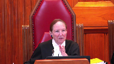
Overlapping speakers (01:51:51): Yes.
Justice Abella (01:51:51): Are you, is the purpose of the Section 7 argument to do some more remedial work than what was done under Section 15?
It’s not clear to me what it is that you’re seeking.
Speaker 3 (01:52:05): I concede it does not change the outcome of the case.
One need only establish one charter breach and one section one non-compliance to get to the end.
But what we have is reasoning which in Ontario was clearly binding that puts us in a position where a person with a mental health disability who is more onerously affected by a law is their particular circumstances and the circumstances of their claimant group are discounted because they’re not a person of reasonable sensibilities.
That’s a very concerning state of the law.
Justice Rowe (01:52:46): So it doesn’t matter for the outcome of this case, if you happen to win on 15-1, but the target here really is doctrinal, to establish something doctrinally using the vehicle of this case concerning Section 7.
That’s what I heard.
Speaker 3 (01:53:04): Yes, it is, and I’m not trying to overreach, but I come here, and as do many of the interveners.
Justice Brown (01:53:12): pretty big reach for a respondent.
I always thought respondents come here and they say you know nothing to see here these aren’t the droids you’re looking for.
Speaker 3 (01:53:21): So I concede we started the fire.
We delivered a responding notice of constitutional question raising section 7. Because again, and you will hear from some of the interveners on this point, the question is can we accept a state of a law that discounts the life experiences of a certain group of individuals simply because they have a mental disability?
And I submit that justice Leroy Dubay said in her concurring reasons we have to do a little modification.
It’s not taking it to a subjective test.
It is simply looking at what is fair when we’re making section 7 rights available to people.
Is it fair that we essentially disenfranchise those who are particularly susceptible to becoming ill because they have a mental illness?
And again, I appreciate that this is I don’t want to go much further and I might be leaving a lot for my friend to reply to.
But this is the situation of law in Ontario now.
We have paragraph 86 where I think Justice Doherty overstated my argument because I was not suggesting that we look at how this the law is either constitutional or unconstitutional depending on how G feels.
The law is either constitutional or unconstitutional or breaches the security of the person’s interests depending on the reasonable sensibilities of a person with mental disorder.
That’s that’s that’s that’s that’s that’s that’s that’s that’s that’s that’s that’s that’s that’s that’s that’s that’s that’s that’s that’s that’s that’s that’s that’s that’s that’s that’s that’s that’s that’s that’s that’s that’s that’s that’s that’s that’s that’s that’s that’s that’s that’s that’s that’s that’s that’s
Overlapping speakers (01:55:06): in the in the
Justice Karakatsanis (01:55:06): circumstances of the claimant.
If you’ve finished with that point, I just want to bring you back to my earlier question because I’m not, I think your answer was we didn’t ask for an individualized assessment at the beginning of the process.
But let me put to you what I think Justice Doherty was getting at.
I think he’s saying that because they are not criminally responsible, it would not be fair to include them in a system that depends on criminal responsibility.
Criminal responsibility.
Without carving out something special for those found NCR.
And so you would need a specific way to show both that the registry should apply to them and that there is a way out.
Is that the link between the substantive equality and requiring an initial individualized assessment?
Speaker 3 (01:56:11): Yes, that would achieve substantive equality, that there be an individualized assessment because of the tremendous range of persons found in NCR.
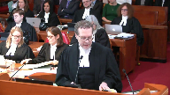
Those who, by luck, they respond well to treatment.
Some don’t.
Those who, by virtue of simply very specific circumstances that gave rise to the offense, like a substance use issue, that can be handled that way.
These are the different things that can all play into the individual circumstances and which could quite reasonably explain an offense and be very impactful on risk and, of course, need to continue to register or maintain registration.
I had determined to give one very brief example of how principles of fundamental justice are implicated.
And I wanted just to touch on the question of over-breadth because the question came up in the long decision, specifically as to whether the, so it’s our condensed book at tab 18.
So I’ve included at tab 18 just the first page of the long decision.
And then this whole discussion of over-breadth, which starts on the second page of tab 18.
So the question was over-breadth and there were conflicting sort of common sense propositions being put forward.
So I’ll just read paragraphs 128 and 129 and then 131, 132.
So instead, we’re faced with conflicting arguments appealing to common sense.
The Crown on one hand asks us to infer that an individual is convicted of more than one designated sexual offense has a greater propensity to commit sexual crimes than an individual that is convicted of only one offense because the difference was a 10-year registration versus a lifetime registration under Christopher’s law.
Or sorry, it was SOIRA.
The appellant on the other hand, supported by the intervener, advances reasonable hypothetical scenarios to argue that the appropriate inference to be drawn is this.
In some cases, an individual is convicted of committing two sexual offenses, particularly two of which are minor and proximate in time.
It is no greater risk of reoffending than an individual who commits one such offense.
And then in paragraphs 131 and 132, the court reconciles it.
And they simply says, in the absence of evidence to the contrary, Parliament is entitled to deference and they have the benefit of the doubt.
But as it happens, in our case, we had a discussion.
And it was particularly in relation to index offenses and the number of index offenses.
So it’s from Dr. Hansen’s evidence.
And it’s the next tab, CB 19, or sorry, 19 of our condensed book.
So at page 39 of Dr. Hansen’s evidence, question 89.
So I’m going to move on to the number of offenses.
And I’ve seen amongst the studies you put forward that if there’s a second offense and they’re both sexual offenses, that is a predictor of increased risk as opposed to a single offense.
And this is very interesting.
Dr. Hansen says, the distinction is between committing an offense or offenses, getting caught, and then doing it again.
And that is a strong well-validated risk factor.
The number of offenses in the index offense is not.
And then there was some discussion as to whether the two offenses would be in close proximity because it was either September 21, 2001, September 22, or September 26.
So they were all within five days of the different offenses.
So then we turn over to page 41 in the record in this part of the transcript.
So question 93, that is fine.
So the question that follows from that is whether this fits into the category of whether the existence of two offenses would make a difference or not, make a difference as to future risk.
And the answer is, for the purpose of risk assessment, when there are two events that are a part of the same crime spree, and this is we were talking about index offenses, so we’re talking about NCR accused, the existence of one, two are probably up to eight events does not empirically increase the risk of recidivism.
So two incidents, either one day apart or five days apart, because those are the two sexual assault charges involving the same victim, would fall into the category of a single crime spree.
And the answer is that is correct.
And they’re, of course, in the same context of the same episode of illness.
But when we then look at Christopher’s Law, that is the difference between one and two offenses of a 10-year period of registration and a lifetime period of registration.
That is my simple, single example of overbreadth.
So we have the restriction on liberty, which is admitted.
Sometimes it’s not much of a gift when the other party concedes that there is, in this case, a restriction of liberty, but they insist that it is modest or minor.
And we’ve set out in our factum sort of why it is that the infringement is somewhat more substantial than that description.
But in any event, we have an admission of a restriction of liberty.
I’ve pushed hard to say that in the case of a mentally disordered accused that it can also implicate security of the person interest.
And then we have overbreadth, because we have a law which, in the context of no evidence of increased or elevated risk, we go from a 10-year to a lifetime requirement of registration under Christopher’s Law.
And of course, when we add that on to section 15, the circumstances of this case, we’ve got no way out.
So that is overbreadth.
And I’m going to try in the remaining time.
Justice Moldaver (02:02:59): I just am missing this because you don’t know what the legislature is going to do under section 15.
And the legislature can take into account a whole lot of things that might satisfy you, it might not.
But I don’t know how it helps us to just sort of take worst case scenarios and say, therefore, if we agree with you that there’s a breach of section 51 here pursuant to the exit ramp thing, then why don’t you wait and see what the legislature does?
Why should we be telling the legislature you must do this, you must do that?
Speaker 3 (02:03:41): I just don’t think it works that way.
And the principle of deference to the legislature is very important.
But I have to also submit that we have, again, we have a state of affairs caused by and not just this particular decision and it’s not isolated to Ontario where you have to consider what is the meaning of section 7.
I submit that.
But if the court doesn’t want to go there, I then only ask the question of.
Justice Moldaver (02:04:12): In terms of determining what the exit ramps will be and when they’re available and so on, it may well be that the legislature decides to take into account the concept of security of the person and make it more flexible for NC Eric.
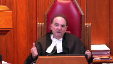
We don’t know what they’re going to do.
And the problem with this.
So that doesn’t invite us to get into section 7 immediately, does it?
Wouldn’t we give the legislature a chance to clean it up?
Speaker 3 (02:04:42): If we succeed under section 15, I can’t ask the court to go further we don’t We can’t as individual litigants
and that’s why again why the importance of an individual remedy for for G was so crucial Rather than having to wait to see what the legislature would do if the court is inclined To simply deal with this case in the basis of section 15 What more what greater interest is my client have again?
I leave to the interveners what what they may say that in terms of the state of the law?
I Have I just ask you one question section?
Justice Martin (02:05:20): 7 argument.
The section 15 argument tends to be focused on no exit ramp or unequal exit ramps that infringe 15.
So how you get off the register.
In section 7, you could ‑‑ it seems to be a little bit broader.
Are you questioning in section 7 how you get on the register or how long you’re on the register and how you get off it?
This particular case is not about getting on.
This case is about getting off.
Not under section 7 either.
Thank you.
Overlapping speakers (02:06:00): facts.
That’s fine.
Thank you.
That’s how we should read Justice Doherty’s reasons.
Speaker 4 (02:06:07): I can’t.
Speaker 3 (02:06:07): I can’t, again, how the legislature deals with it, I submit, has to be based on what the court has said in terms of its ratio, not necessarily its obit or potential review, or how something could be read.
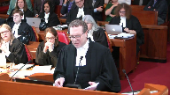
I think that’s fair.
I don’t want to put more weight on something than I can bear.
If I can speak to, I’m going to actually defer to the ASPR Centre on the issue of remedy, because it is, and they’re disinterested, and they can help us.
But certainly, for a litigant to go through three levels of court only to be told that you’ll have to wait, the outcome of what the legislature does is not an acceptable way for courts to ultimately deal with somebody’s rights.
Justice Rowe (02:07:00): Another way of looking at it is, I’m going to try to encapsulate what Justice Doherty said, if this individual, having had a clean record for 17 years, can’t get off the register, then it’s going to be a pretty weird off-ramp, right, and just, you know, this one looks like a kind of a, as they used to say, as they say in baseball, a clean tag.
Speaker 3 (02:07:24): And that’s all of the evidence.
Overlapping speakers (02:07:29): And then.
Speaker 3 (02:07:29): And despite the efforts twice to stay that ruling, to try to keep G first in the Court of Appeal and then in this court on the register, the facts just did not support that.
Justice Brown (02:07:38): Well, maybe Justice Doherty is a PhD in a field that I don’t.
The point is your client is claiming an entitlement to an off-ramp, to an individualized assessment.
I would put it the other way.
So we’re exempting them not only from the law, but from the off-ramp.
Speaker 3 (02:08:02): up.
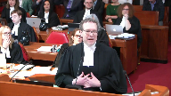
But I would suggest that it’s the other way.
I think that when someone, if liberty is being restricted or if someone is section 15 rights are being restricted, it’s actually the placement or continued placement of the registry.
It’s not that he’s been denied a benefit of an off ramp.
He’s still being put under the registry.
It is an onus on him.
And I think it’s very important just to mention this fact.
It was open if there was a risk posed by g in this case for a defense medical examination to be conducted for them to actually assess his risk so as to have a justification for keeping him on the registry.
And that opportunity was not taken up.
And it wasn’t a burden on him to prove that he’s safe and that he’s not dangerous.
He did highlight tremendously I’ll say sympathetic fact circumstances.
But what we have here is, again, we have I think some onus.
If a government is going to do something to somebody, it has to give a justification.
Justice Wagner (02:09:05): Thank you.
Mr. Sabilla has one last question.
Justice Abella (02:09:07): I want to be clear because in my mind the question of whether or not to grant a suspension of the legislation is affected by your answer to this.
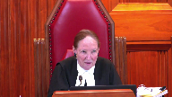
You said that this case is only about exit ramps and the availability of exit ramps to those who have an NCR finding.
If what would be suspended or not would be what?
The availability of exit ramps where they exist for others and we want to be clear that
Overlapping speakers (02:09:42): No, of course not.
Justice Abella (02:09:44): What is it exactly that you say is being suspended and what is your position on whether or not there should be a suspension?
Speaker 3 (02:09:55): The application of Christopher’s law to people found in cr and absolutely discharged is being suspended and of course that’s only being ‑‑ that is what is being struck down.
The application of Christopher’s law to people that have been absolutely discharged by the review board, that’s the scope of our case.
That would reflect in the court of appeals order.
And that is what they suspended for a year.
So that is ‑‑
and it is up to now ‑‑ up now to the legislature to fashion how they are going to deal with the unconstitutionality.
Justice Karakatsanis (02:10:32): Are you saying then that that’s been read in that qualification has been ready into the section?
Speaker 3 (02:10:39): No, I’d say that the remedy that was granted by the Court of Appeal in any event was to say that you cannot apply Christopher’s Law to those absolutely discharged by the review court.
Justice Karakatsanis (02:10:48): But if there’s no suspension, or at the end of the year, the legislature does nothing, what’s the impact?
That’s been declared invalid.
There’s been no reading in.
That’s the end of it, isn’t it?
Speaker 3 (02:10:59): The year expires, Christopher’s law no longer applies to those who have been absolutely discharged by the review board.
And again, the legislature has the ability now to step in and say what they’re going to do.
Justice Karakatsanis (02:11:12): So, you’re saying that an order like that would be like reading in those words, unless legislature does something different.
Speaker 3 (02:11:20): The I think that the way that the law would be struck down, Christopher’s law as applied to those who have been absolutely discharged by the review board would be struck down.
It would no longer have any force.
That is what the court of appeal did.
And it would be, again, that is suspended.
But to give the legislature the opportunity to create the exit ramp if that is what they choose to do.
Overlapping speakers (02:11:51): Thank you very much.
Justice Wagner (02:11:52): Erin Dunn. Yes.
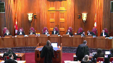
Speaker 5 (02:12:24): Good morning, Chief Justice, Justices.
On behalf of the Criminal Lawyers Association, I will be making submissions only in relation to the Section 15 issue, and I intend to take up one of the arguments made by the appellant, namely that Christopher’s Law exempts or relieves individuals of their obligations under the registry in order to avoid potential conflict with federal legislation.
This is their sort of federalism point, that they are entitled to rely on the distinctions drawn in the Criminal Code and in the Criminal Records Act between NCR-accused and non-NCR-accused offenders.
The position of the CLA is that the discriminatory effect of Christopher’s Law is the result of legislative choice by the province, and that the province cannot avoid its constitutional obligation of substantive equality by suggesting another piece of legislation is to blame for the discriminatory impact.
At paragraph 55 of the appellant’s factum, the Attorney General argues that the province doesn’t want to frustrate the federal purpose of a pardon, and that is the reason why those who are pardoned are relieved or exempted from the registry.
Because, the appellant argues, that a pardon is meant to provide the offender with a fresh start to wipe the slate clean.
Our submission is that the appellant, the claim that the appellant exempts or relieves certain sex offenders from registration and reporting in order to avoid a potential conflict is belied by the fact that the province appears to have no similar misgivings about mandating that NCR-accused be placed on the registry without exit ramps, and the fact that that may well frustrate the purpose of other federal legislation, namely part 20.1 of the Criminal Code.
It appears accepted by everyone that 20.1 of the Criminal Code is meant to treat mentally disordered accused differently, that NCR people occupy a special place in the criminal law because of their lack of criminal responsibility, and that the goal of that scheme is the treatment and safety of the public and the eventual reintegration into the community of NCR-accused without the burden of a criminal record.
And Winko says very eloquently at paragraph 47 that indeed the only constitutional basis for the criminal law restricting the liberty of an NCR-accused is the protection of the public, and once the NCR-accused ceases to be a threat to society, that the criminal law loses its authority, and yet it is precisely at this time when the criminal law has lost its authority that the province, through Christopher’s law, the NCR-accused becomes automatically branded a sex offender, and in the circumstances of Mr. G, that’s for the rest of his life without an opportunity to shed that burden.
I say that the decision by the legislator in Christopher’s law about who is going to be subject to registration is very much a choice.
It’s not the necessary implication of criminal records or no criminal records.
Christopher’s law provides that you can commit an offense, a sexual offense, and not be placed on the registry because it says a discharge is don’t apply.
It’s only convictions or NCR.
So they’ve made that choice.
They’ve similarly made a choice about those who receive suspensions.
As I note in our factum, the Criminal Records Act ends obligations and disqualifications for a person who, by reason of conviction, have those obligations under any act of parliament.
It’s not meant to relieve those burdens under provincial legislation.
My final point would be then, even if assuming that there is some potential conflict between the federal legislation, the province is not entitled or required to protect against a challenge in terms of a conflict by treating NCR persons in a discriminatory manner.
The province has not explained or provided any reason why Christopher’s law cannot be both consistent with federal legislation and non-discriminatory.
And I want to, in my few moments remaining, just address this idea that the problem could be solved by simply eliminating exit ramps for convicted offenders or discharged offenders.
I say that ignores the substantive equality finding of Justice Dorey at Paragraphs 127 and following and that the categorical approach that’s untethered to a specific finding of risk assessment in relation to an NCR accused has a differential impact because they are a member of a group that has been stereotyped on the basis of these prejudicial attributes or attitudes that says they are necessarily and inevitably dangerous.
That lack of having an exit route, even if it’s constitutionally acceptable for convicted offenders, would not be constitutionally acceptable for NCR accused.
Thank you very much.
Justice Wagner (02:17:51): Mr. Pressler.
Speaker 6 (02:18:12): Good morning, Chief Justice, Justices.
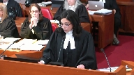
It’s my pleasure to be here this morning with my co-council Shakir Rahim representing the Canadian Civil Liberties Association, the CCLA.
And Justices, Chief Justice, today I’m that intervener we’ve all been talking about so far who’s going to actually make some submissions about Section 7.
And we have two main submissions for the court today arising from, about Section 7, arising from the registration of absolutely discharged NCR accused.
And they are, firstly, that registry requirements are onerous and meaningfully intrude on the liberty of registered NCR accused.
And secondly, that this deprivation of liberty caused by registration is not in accordance with the principles of fundamental justice.
So moving to that first argument, that registry requirements are onerous and meaningfully deprive of liberty, the Court of Appeal here recognized that sex offender registration implicates the liberty interest.
And the Crown accepts in this case that this is so.
But the Court of Appeal characterized the liberty infringement caused by registration as modest or minimal.
With respect, the CCLA disagrees.
Justice Rowe (02:19:31): Yeah, but just applying an adjective doesn’t do very much.
What it consists of is, here’s where I live, here’s what I look like, here’s where I work.
Anything else?
Speaker 6 (02:19:42): Well, with respect, Justice Roe, the CCLA disagrees with that characterization.
We say, like a couple of other Canadian courts have said, and we’ve cited their decisions in our faculty.
Justice Rowe (02:19:52): No, no, that wasn’t a characterization, that was a description.
Is the description factually inaccurate?
You may apply a different adjective to it.
Speaker 6 (02:20:01): With respect, Justice Roe, I would say that the description, as you’ve described it, is factually inaccurate, with all due respect, and the reason the CCLA takes that position is that the cumulative effects of all of the various registry requirements end up being much more significant than, as you said earlier, Justice Roe, just providing your address.
300 people are required to attend annually to report in person.
They’ve got a continuing obligation to report changes within a short period of time, seven days.
The depth, breadth, and width of the personal information that they have to provide is quite staggering.
Make model, colour, body type of their car.
They have to agree to provide photographs of themselves annually.
There have to be descriptions, physical descriptions of them entered into the register annually.
There’s the potential for random police checks.
The legislation and the regulations themselves say police are required to verify address.
That may be done by attending in person at the individual’s home.
There are significant consequences of breaching, which may include being arrested on a search warrant charge and incarcerated on a first offense for up to a year, on a subsequent offense up to two years, and the duration of all of this in Mr. G’s case is life without opportunity for termination or review, and the regulations are clear that the registry is cumulative and permanent.
So we say given that description of registry requirements, the proper characterization of the liberty impact is that it is significant.
Justice Martin (02:21:54): So we in your factum you focus on liberty interests is that just because that’s your singular focus you’re not by that saying that there’s no possibility of a security of the person claim or all right.
Speaker 6 (02:22:06): The CCLA would support the respondent in his submissions about security of the person and we would support the respondent, although, you know, in our 10-page factum we didn’t focus on that, we would support the respondent’s position that a modified objective test, the kind of test that’s well known in criminal law, would be appropriate for the assessment of security of the person in trust under Section 7.
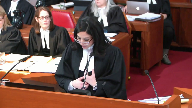
Moving along then very quickly to my second submission for the court’s consideration.
We say that this more significant deprivation of liberty caused by registration is not in accordance with the principles of fundamental justice.
The Court of Appeal here held that it was and again the CCLA respectfully disagrees.
The basis for this holding below was that because the liberty intrusion was characterized as mild, registration didn’t require sensitive individualized risk assessment to justify it.
And really the crux of the Court of Appeal’s holding here was that given that modest liberty violation, registration based on generalized actuarial risk rather than more finely tuned individualized assessment of risk was not overbroad.
The court found that minor liberty violations for a person who poses a statistical risk, if not an actual one, cannot be said to overreach.
And I’ll conclude by saying, justices, that we disagree with this.
It’s our position that in a case where the liberty violations are not minor, imposing them on a person who poses a statistical risk but not maybe an actual risk does overreach.
And for this reason we say that the liberty violations here are not in accordance with the principles of fundamental justice.
And seven is breached.
Justice Wagner (02:23:55): Thank you.
Speaker 7 (02:24:08): Good afternoon, Chief Justices, Justices.
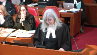
The Osprey Center focuses its submission solely on the issue of remedy in this case, and suggests that this is an opportunity for the court to clarify the application of Section 52 and the use of the suspended declaration, along with the Section 24.1 individualized remedy.
Section 52 has been interpreted by this court in such a way as to facilitate remedial discretion to grant a delay in a declaration of invalidity.
The default, however, ought to be that legislation that is inconsistent with the charter is immediately and retroactively of no force in effect.
Suspended declarations in contrast, and despite their frequent use, are extraordinary and should not be the default. Why not?
The following reasons are drawn from the academic commentary cited in our factum, and there are five.
The first is that they have the same effect, albeit for a specified period of time, as a limitation on charter rights.
Secondly, they allow an unconstitutional state of affairs to persist.
And this was noted by Justice LeMayer in chapter.
Thirdly, successful rights claimants may have a right, but no remedy with practical impact.
And this has been criticized by Professors Robert Leckie and Bruce Ryder in their commentary.
Fourthly, they prolong the violations of the rights of those situated similarly to the claimant.
And lastly, they perpetuate a breach of the charter that has already been determined to be unjustified.
Justice Brown (02:25:42): Can I give you another reason?
And the reason is this, is that legislatures themselves have the power to give themselves the time that they need by the exercise of an express power that’s given to them in section 33, as opposed to the exercise by this court of a power that it has implied in section 52.
Speaker 7 (02:26:06): I don’t disagree with you, Justice Brown.
In fact, I would say that once they have a ruling from this court, that the law is unjustified, that they could then use.
Overlapping speakers (02:26:15): If they need more time, the Attorney General can ask Queens Park for that.
They could.
Speaker 7 (02:26:19): That is not to say, though, that they do not have a place amongst the remedies available.
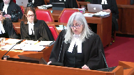
However, the Asper Centre takes the position that the use must be justified and necessary.
We draw from the Hong Kong Court of Final Appeal as an example in the case of Ku Jiu, which is found at paragraph six of our factum, which the court said a suspension would not be accorded if it is unnecessary and would not be accorded for longer than is necessary.
The Asper Centre submits that their proper approach to suspended declarations of invalidity is that they must be justified as necessary, based on a legitimate objective, and consistent with general principles of proportionality as they relate to the nature of the violation and the proposed suspension.
The Shakhtar categories should be taken as merely examples, as they do not, they have not been strictly followed, and we can look at the cases of Corbiere, Dunmore, Shauli, Bedford and Carter as examples in which they don’t fit neatly necessarily into those categories.
Even Justice Le Maire and Shakhtar said these are not hard and fast categories or rules.
We would look to, for example, the ward decision in the context of the countervailing factors and the good governance concerns that are the onus of the government to demonstrate, but primarily the onus must be placed on the government to justify the delay in the effect of the declaration of unconstitutionality.
Finally, once the court is persuaded that a suspended declaration is necessary, it must turn to a determination of whether section 24.1 remedy is appropriate.
We see section 52 and section 24 as complementary and flexible rather than rigid silos, and we would urge this court to resile from the case of De Mares and prefer the reasoning of Justice Labelle in his dissent.
And I think that the appellant and the Attorney General for Canada have both said these should not be seen as rigid rules or exclusions.
This approach acknowledges the impact on the claimant of both the original violation and its continuation for the period of suspension.
It recognizes the principle of a right to a remedy by the successful litigant, and it suggests either a two-track approach, which is one that is both individual and systemic in terms of the remedies, and that’s been advocated by Professor Kent Roach, or what is demonstrated by the Carter decision, which is similar to a more robust South African approach where it follows from such cases as Swain, for example, where the court during that interim period has established some rules to help minimize the negative impacts.
And finally, in the two seconds that I have, if I can just complete it, a section 24 remedy can be used as an interim or temporary measure that does not have the same impact as a permanent constitutional exemption.
Speaker 4 (02:29:21): What?
Justice Abella (02:29:23): Thank you.
Justice Wagner (02:29:24): It’s, uh, let’s get it.
Speaker 8 (02:29:28): Chief Justice, justices of the court, good afternoon.
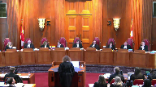
Before I get into my submissions, Justice Brown, I want to say to you I think today that I’m the gal who is saying nothing to see here.
Everything is fine now with how it got sorted below.
Overlapping speakers (02:29:48): You’re after my own heart.
Speaker 8 (02:29:49): My client today is the empowerment council, a group of people with mental health and addiction issues like Mr. G.
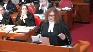
I’m here today representing the people who will be directly affected by your judgment.
The people for whom there was no hope of ever getting away from the grasp of Christopher’s law before Ontario’s court of appeal and justice gave them some light at the end of that tunnel.
And for me it is especially rewarding to be here because I have been consumed with the weight of the unfairness of these issues for my clients since day one.
In fact, I co-authored the article that we rely on in our materials because there was literally nothing available to assist us on these issues.
Why is it that no one had ever looked at the impact of sex offender registries on NCR accused?
We say the answer to that question exposes the double discrimination at the heart of this case.
We say it is precisely because of the severe prejudice against persons with mental health issues who have committed a criminal act and then add to that the inflammatory label of sex offender and this is a population that literally nobody cared about.
But we are thinking about them now and with my few minutes I want to think about what happens when someone is found NCR.
How that NCR accused experiences what is happening to them when they suddenly realize they are subject of sex offender registries and in particular when the reality sets in that there is no way out.
So let’s put ourselves in the shoes of the typical NCR accused that this case affects directly.
The index offense is one of a sexual nature but that could be anything.
It could be touching a breast or buttocks as justice brown identified earlier.
The index offense could be the product of extreme disorganization during a psychotic episode and by definition the person had no idea what they were doing or that it was wrong.
So putting ourselves in that person’s shoes, what do we have?
You come into this special stream, this system built to help you get well and to get you back into society.
It’s the assessment treatment model.
The idea is that your risk is being reassessed on an ongoing basis and as you are being treated your risk is going down, your liberties are going up.
And then when you are doing well enough finally to be discharged to the community you are told that’s the good news and now for the bad news guess what, you have to start reporting as a sex offender.
Imagine how disorienting and how soul destroying that must be for the person who is already vulnerable to stressors and to decompensating when stressed.
And then things only get worse for the answer accused even while they should be regaining their freedom fully and completely.
When they finally graduate from the review board system the expert tribunal has determined they no longer pose a significant threat to the safety of the public, person has done well they are taking their medication, they are seeing their doctor, they are going to have psychiatric follow up, maybe they have a job, they are in school, maybe they have a family.
It’s been a long road, sure, but they are insightful now and they are ready for the first day of the rest of their life.
And then the bad news, again though, wait a minute, you are free of the board but you are still a sex offender and guess what else, that’s never going to change.
The absolutely discharged accused in that situation cannot be blamed for thinking wait a minute, that can’t be right.
Who do I see about that?
Where do I go to challenge that?
There must be somewhere.
Otherwise, what is the point of participating in your own recovery and rehabilitation to do the work toward that absolute discharge if you cannot even try to remove this whole other scary thing that’s hanging over your head?
Or in fact, will an accused person who is frightened of the sex offender label be too afraid to ever be discharged?
And with my last few seconds, I bring you to Mr. Odebe who we put a lot of emphasis in our materials and for your reference, although you don’t need to turn it up, it’s tab four in our condensed book, everything turned out okay for Mr. Odebe because he was removed from the sex offender registry.
Because there was an exit ramp available for him at that time.
In the early days of the retroactive application of soy ramp you could apply for that exemption within a year and it helped you get off the thing because Christopher’s law was not applicable to offenses prior to 2001.
And Mr. Odebe got his exemption but what happens now if I can end with this, what would happen to Mr. Odebe now if that exemption, that exit ramp were not available to him?
What would happen to him?
And we say the hopelessness that would be engendered by the current regime is not only risk enhancing but even without that, it’s discriminatory and profoundly unfair.
It simply must end.
Thank you very much.
Justice Wagner (02:35:04): Any reply?
Speaker 1 (02:35:15): Thank you, chief justice.
Justices, very briefly on two points.
One security of the person, one remedy.
The respondent asks you to reform the law of security of the person to respond to an argument that was rejected by both levels of court below.
We submit that you should decline that invitation for three reasons.
First, it’s not necessary to address section 7 at all if you find an unjustified infringement of section 15.
Second, it’s not necessary even to consider fundamental justice to find that security of the person is engaged here.
Even if you are going to consider section 7, it is admitted and was found below that liberty is engaged by Christopher’s law and so we’re already at fundamental justice.
The third reason is the findings of fact of the application judge upheld by the court of appeal below.
They’re set out in my factum at paragraph 63 and 64 to say that as a matter of fact, viewed objectively, there is no evidence that this individual has suffered any substantial hardship in complying with Christopher’s law over the years or any injury to his psychological well-being different from what anyone would feel being required to report annually to the police station.
So when my friend says he’s not seeking a subjective test under security of the person, he’s seeking a modified objective test from the circumstances for someone in similar circumstances to the claimant, in this case, the claimant’s circumstances were analyzed and were found, the findings of fact were made, they were upheld on the court of appeal.
No palpable and overriding error has been identified.
So it must be then that if the law is to be reformed to deal with security of the person, it has to be some other hypothetical person’s security of the person who has been engaged because of the courts below found that this individual’s security, the person in this person’s circumstances, this actual individual was not deprived of security of the person.
I’m also going to turn now to the remedy and respond to the suggestion that it’s common sense that if a person has not recidivated in 17 years, then they won’t.
It may be a matter of common sense, but there was no expert evidence that scientific risk assessment comes to that conclusion.
So if that’s a plausible inference, it’s plausible as a matter of common sense but not as a matter of structured or formal risk assessment.
Justice Brown (02:38:01): rule against you on section 15, in which cases you point out your section 7 problem solved, what terms would you say?
I mean, are you just saying deal with this by way of a suspended declaration, or are there terms of an order that allow you to…
Overlapping speakers (02:38:22): Justice Brown, we ask for a suspended declaration.
Justice Brown (02:38:25): Why don’t you go to Queen’s Park and ask them for a suspended declaration by invoking Section 33?
Speaker 1 (02:38:31): Rather than that, we ask this court to recognize that this falls within the public safety exception as the Court of Appeal recognizes.
Justice Brown (02:38:39): ask rather than ask Queens Park to invoke a power that it has, you’re going to ask us to invoke a power that we haven’t been expressly given.
Speaker 1 (02:38:49): I certainly I am requesting that you invoke that power the same power used in Swain and for principally the same reason Some of us did, yeah.
Justice Karakatsanis (02:38:58): Can I ask you what you say the effect would be if nothing happens after a year and the and we have the order that was given by the Court of Appeal.
Speaker 1 (02:39:08): If the declaration given by the court of appeal below comes into force and there has been no legislative response, then that will mean that Christopher’s law will not apply to persons found NCR who have been absolutely discharged.
Overlapping speakers (02:39:22): So you’re saying it would be like reading that in to the legislation?
Speaker 1 (02:39:26): It would be a qualified, similar to the remedy in fact in Carter, it would be a qualified declaration of invalidity or a declaration of invalidity as applied in a particular
Justice Karakatsanis (02:39:36): think that Carter said that it would be invalid unless they did something to, to address the constitutional failing.
Because this is my question to you.
If you are right, and notionally it is the same thing as this court reading in those words going forward, even though the court chose not to exercise that remedy, then why wouldn’t you say that G in this case shouldn’t be exempt for the next 12 months?
Speaker 1 (02:40:06): We don’t say that it’s a reading in.
We say what a suspended declaration does is say that the law is invalid to the extent of the inconsistency with the constitution and here the extent of the inconsistency with the constitution is the failure to provide a comparable exit ramp and that suspension is that declaration, I’m sorry, is delayed for 12 months to allow the legislature to respond if it wants to, but if it does not respond and the declaration is made, then the law is invalid to the extent that it does not provide NCR persons with these provisions and the effect of that would mean that the law could not be applied against NCR persons who receive absolute discharge.
Justice Karakatsanis (02:40:49): What’s the objection to exempting G for the next 12 months?
Speaker 1 (02:40:55): The exemption, our submission that it was an error to exempt him is based principally on the position that there is no particular prejudice to him or reason that he can’t wait that distinguishes him from any other person, all of the other persons who are found NCR and absolutely discharged who are equally affected by Christopher’s law and the suggestion of the Court of Appeal that the Court of Appeal can predict without giving G the benefit of the assessment that they say he hasn’t have, they can predict that any assessment that were devised he would merit deregistration was with respect unfounded on the evidence and there my last word is simply to appeal to Mr. G’s expert, Dr. Brink and his report which is in my condensed book at tab 7

and it’s the first paragraph at tab 7 of my condensed book G’s expert Dr. Brink says research established several decades ago that unstructured risk evaluation where the clinician forms an opinion regarding risk in a manner that is unstructured and unguided by any formal framework and without clear considerations of a set of risk factors has an unacceptably high error rate, accurate in significantly less than 50% of cases thus it would be better to flip a coin.
That’s G’s expert.
So if there’s a formal structured assessment to be done it should apply to G just as it should apply to everyone.
Justice Wagner (02:42:28): I’d like to thank the Council for their good submissions.
The Court will take the case under advisement.
Thank you very much.